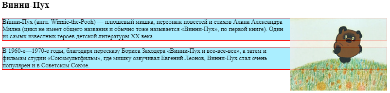
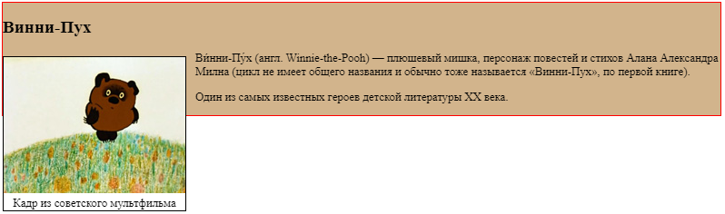
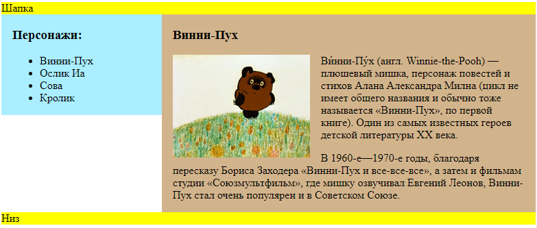
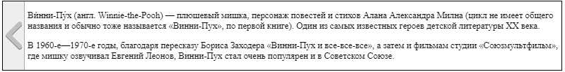

Алгоритмы
Big O нотация
Сложность алгоритма показывает зависимость переданных в него данных от времени выполнения. Для того, чтобы сравнивать сложность алгоритмов используют нотацию Big O. Сложность в порядке возрастания: O (1) - Постоянная (константная) сложность. O (log n) - Логарифмическая сложность. O (n) - Линейная сложность. O (n log n) - Линейно-логарифмическая сложность. O (n ^ 2) - Квадратичная сложность. O (n ^ 3) - Кубическая сложность. O (2 ^ n) - Экспотенциальная сложность (показательная степень). O (n!) - Факториальная сложность. Примеры: Расчет чисел Фибоначчи с помощью двойной рекурсии - O (2 ^ n). Алгоритм бинарного поиска - O (log n). Задача с коммивояжером (поиск кратчайшего расстояния для посещения всех городов) - O (n!). Медленная сортировка - O (n^2). Алгоритм быстрой сортировки - O (n * log n).Как доказать, что порядок сложности верный
Используем признак сходимости Даламбера (математический анализ). Рассмотрим положительный числовой ряд. Если существует предел отношения последующего члена к предыдущему равный D, то при D < 1 ряд сходится, при D > 1 ряд расходится, при D = 1 признак не дает ответа и нужно использовать другой (например, признак Коши).Бинарный поиск
Сложность алгоритма O (log n) function binarySearch(arr, num) { let left = 0; let right = arr.length - 1; while (left <= right) { let mid = Math.floor((left + right) / 2); if (arr[mid] === num) return mid; if (num < arr[mid]) { right = mid - 1; } else { left = mid + 1; } } return - 1; }Быстрая сортировка
Работает намного быстрее сортировки выбором. Среднее время выполнения быстрой сортировки составляет O (n log n). Алгоритм быстрой сортировки работает так: 1. В массиве выбирается элемент, который называется опорным (pivot). 2. Находятся элементы (подмассивы) меньше опорного и больше опорного. 3. К подмассивам длиной больше 1 применяется быстрая сортировка (рекурсивно). Ниже приведены два варианта написания алгоритма.Вариант 1
+ Прост в написании. - Задействует дополнительную память. - Имеет сложность O(n ^ 2) для уже отсортированных массивов. function quickSort(arr) { if (arr.length < 2) return arr; let pivot = arr[0]; let less = []; let greater = []; for (let i = 1; i < arr.length; i++) { if (arr[i] <= pivot) less.push(arr[i]); if (arr[i] > pivot) greater.push(arr[i]); } return [...quicksort(less), pivot, ...quicksort(greater)]; }Вариант 2
- Больше кода. + Не задействует дополнительную память для хранения подмассивов. + Имеет сложность O(n log n) для уже отсортированных массивов. function partition(arr, left, right) { // вспомогательная функция const mid = Math.floor( (right + left) / 2); const pivot = arr[mid]; let i = left; let j = right; while (i <= j) { while (arr[i] < pivot) { i++; } while (arr[j] > pivot) { j--; } if (i <= j) { [arr[i], arr[j]] = [arr[j], arr[i]]; i++; j--; } } return i; } function quickSort(arr, left, right) { if (arr.length > 1) { let index = partition(arr, left, right); if (left < index - 1) { quickSort(arr, left, index - 1); } if (right > index) { quickSort(arr, index, right); } } return arr; }Поиск в ширину (bfs)
Алгоритм breadth-first search (поиск в ширину) позволяет определить, существует ли путь из точки А в точку Б. Если путь существует, находит кратчайшее расстояние. Для работы алгоритма использутеся граф (абстрактная структура данных). Граф состоит из нескольких узлов, при этом каждый узел соединяется с соседними узлами. Чтобы выразить это отношение, применяется хэш-таблица (в JS это обычный объект). Ниже представлена моя реализация алгоритма. Если требуется определить, существует ли путь, можно возвращать true вместо distances[current] и false в конце, если путь не найден. function bfs(graph, target, start) { let queue = []; let checked = {}; let distances = { [start]: 0, }; queue.push(start); while (queue.length) { let current = queue.shift(); if (current === target) return distances[current]; let parentDistance = distances[current]; graph[current]?.forEach( name => { if (!checked[name]) queue.push(name); checked[name] = true; distances[name] = parentDistance + 1; }); } return -1; } Пример: const graph = { you: ['alice', 'bob', 'claire'], claire: ['thom', 'johny'], bob: ['anuj', 'peggy'], alice: ['peggy'], anuj: ['kate'], peggy: [], thom: [], johny: [], kate: [], } console.log(bfs(graph, 'bob', 'you')); // 1 console.log(bfs(graph, 'peggy', 'you')); // 2 console.log(bfs(graph, 'kate', 'you')); // 3 console.log(bfs(graph, 'ksjldkjfls', 'you')); // -1Алгоритм Дейкстры
Об алгоритме
Используется для реализации взвешенных графов. Работает только в случае, если все веса положительны. При наличии отрицательных весов нужно использовать алгоритм Беллмана-Форда. Для реализации нужно три хеш-таблицы (граф, стоимости, родители), а также список обработанных узлов. На этот раз необходимо сохранить как соседей, так и стоимость перехода к соседу. Воспользуемся другой хэш-таблицей для этого: let graph = { // граф start: {}, // внутренняя хэш-таблица }; graph.start.a = 6; graph.start.b = 2; let costs = { // стоимости A: 6, B: 2, finish: Infinity }; let parents = { // родители A: 'start', B: 'start', finish: null }; let processed = ["start", "A", "B"]; // массив уже обработанных узловРеализация
Пример:Построим граф: const graph = { start: {A: 5, B: 2}, A: {C: 4, D: 2}, B: {A: 8, D: 7}, C: {D: 6, finish: 3}, D: {finish: 1}, finish: {} }; function lowestCostNode(costs, processed) { return Object.keys(costs).reduce((lowest, node) => { if (lowest === null || costs[node] < costs[lowest]) { if (!processed.includes(node)) lowest = node; } return lowest; }, null); }; function dijkstra(graph) { const costs = Object.assign({finish: Infinity}, graph.start); const parents = {finish: null}; for (let child in graph.start) { parents[child] = 'start'; } const processed = []; let node = lowestCostNode(costs, processed); while (node) { let cost = costs[node]; let children = graph[node]; for (let n in children) { let newCost = cost + children[n]; if (!costs[n]) { costs[n] = newCost; parents[n] = node; } if (costs[n] > newCost) { costs[n] = newCost; parents[n] = node; } } processed.push(node); node = lowestCostNode(costs, processed); } let optimalPath = ['finish']; let parent = parents.finish; while (parent) { optimalPath.push(parent); parent = parents[parent]; } optimalPath.reverse(); const results = { distance: costs.finish, path: optimalPath }; return results; }
Жадные алгоритмы
Это алгоритмы, которые на каждом шагу делают наилучший выбор в надежде, что итоговое решение будет оптимальным. Жадные алгоритмы хороши не только тем, что они обычно легко формулируются, но и тем, что простота обычно оборачивается быстротой выполнения. Пример: в задаче с коммивояжером, точный алгоритм нахождения кратчайшего пути вычисляется за n! операций, так как необходимо построить все возможные маршруты. Для большого числа городов это решение будет слишком медленным. Поэтому на помощь приходит жадный алгоритм, который вычислит приближенное решение: 1. Начальный город выбирается произвольно. 2. После чего каждый раз, когда коммивояжер выбирает следующий город, он перемещается в ближайший город из тех, что он еще не посещал.NP полные задачи
Вычислительная задача называется NP-полной (от англ. non-deterministic polynomial – «недетерминированные с полиномиальным временем»), если для неё не существует эффективных алгоритмов решения. К этому классу относятся много важных практических задач, например, задача с коммивояжером и задачи на покрытие множества.Динамическое программирование
Применяется при оптимизации некоторой характеристики. Динамическое программирование работает только в ситуациях, в которых задача может быть разбита на автономные подзадачи. В каждом решении из области динамического программирования строится таблица. Значения ячеек таблицы обычно соответствуют оптимизируемой характеристике. Каждая ячейка представляет подзадачу, поэтому необходимо подумать о том, как разбить задачу на подзадачи. Не существует единой формулы для вычисления решений методом динамического программирования.Пример задачи на динамическое программирование
Предположим, что вы собираетесь в турпоход. Емкость вашего рюкзака составляет 6 фунтов, и вы можете взять предметы из следующего списка: вода, 3 фунта, 1О; книга, 1 фунт, 3; еда, 2 фунта, 9; куртка, 2 фунта, 5; камера, 1 фунт, 6. У каждого предмета имеется стоимость: чем она выше, тем важнее предмет. Как выглядит оптимальный набор предметов для похода?Как искать решение
Каждый алгоритм динамического программирования начинается с таблицы. Строки таблицы представляют предметы, а столбцы - емкость рюкзака от 1 до 6 фунтов. В исходном состоянии таблица пуста. В этой задаче я использую две таблицы, которые буду заполнять параллельно: одну для максимальной ценности вещей, другую - для их названий. Для каждой ячейки первой таблицы будет производиться следующий расчет: cell[i][j] = Math.max(previous, current) где previous - предыдущий максимум (значение в cell[i - 1][j]) current - стоимость текущего элемента + стоимость оставшегося пространства, стоимость оставшегося пространста можно получить как cell[i - 1][j - вес предмета]Мой код с решением
let weight = { water: 3, book: 1, food: 2, jacket: 2, camera: 1, }; let cost = { water: 10, book: 3, food: 9, jacket: 5, camera: 6, } const allowedWeight = 6; let weights = Object.entries(weight); let costs = Object.entries(cost); const table = []; const names = []; let rows = costs.length; let cols = allowedWeight; for (let i = 0; i < rows; i++) { table.push([]); names.push([]); let currentCost = costs[i][1]; let currentWeight = weights[i][1]; let currentName = costs[i][0]; for (let j = 0; j < cols; j++) { let previous = table[i - 1]?.[j] || 0; let empty = j + 1 - currentWeight; let current = 0; if (empty === 0) { current = currentCost; } else if (empty > 0) { let emptyCost = table[i - 1]?.[empty - 1] || 0; current = currentCost + emptyCost; } table[i][j] = Math.max(previous, current); // Реализация второй таблицы с названиями вещей, которые можно взять let previousName = names[i - 1]?.[j] || null; let put = previousName; if (empty === 0) { if (previous > current) { put = previousName; } else { put = currentName; } } else { if (previous > current) { put = previousName; } else { if (previousName === null) { put = currentName; } else { put = names[i - 1]?.[empty - 1] + ' ' + currentName; } } } names[i][j] = put; } }Ответ на задачу
Выведем эти таблицы в консоль: console.log(table); console.log(names); Получили следующие таблицы: 0: [0, 0, 10, 10, 10, 10] 1: [3, 3, 10, 13, 13, 13] 2: [3, 9, 12, 13, 19, 22] 3: [3, 9, 12, 14, 19, 22] 4: [6, 9, 15, 18, 20, 25] 0: [null, null, "water", "water", "water", "water"] 1: ["book", "book", "water", "water book", "water book", "water book"] 2: ["book", "food", "book food", "water book", "water food", "water book food"] 3: ["book", "food", "book food", "food jacket", "water food", "water book food"] 4: ["camera", "book camera", "food camera", "book food camera", "food jacket camera", "water food camera"] Ответ будет в самой правой нижней ячейке таблицы, то есть "water food camera". Ценность вещей - 25.Алгоритм k ближайших соседей
Построение рекомендательной системы
Алгоритм можно использовать для построения рекомендательной системы. Информация о каждом пользователе наносится на график. Положение пользователя определяется его вкусами, поэтому пользователи с похожими вкусами располагаются недалеко друг от друга. Расстояние между пользователями можно вычислить по формуле Пифагора: sqrt((x2 - x1)^2 + (y2 - y1)^2 + (z2 - z1)^2 + (m2 - m1)^2 + ...) где x, y, z, m... - положение на графике вкусов пользователя по какому-либо признакуПрогнозирование
Алгоритм также можно использовать для прогнозирования оценок пользователей / оценки кол-ва продуктов, которое будет использовано в тот или иной день и тд. Для прогнозирования используется регрессия. Регрессия - прогнозирование ответа (в числовом выражении). Регрессия вычисляет среднее арифметическое оценок ближайших соседей. Для того, чтобы знать, оценку скольких ближайших соседей стоит учитывать: Существует хорошее эмпирическое правило: для N пользователей следует рассматривать sqrt(N) соседей. Алгоритм k ближайших соседей применяется для классификации и регрессии. Классификация - распределение по категориям. "Извлечением признаков называется преобразование элемента (например, фрукта или пользователя) в список чисел, которые могут использоваться для сравнения. Качественный выбор признаков - важная часть успешного алгоритма k ближайших соседей.Поиск в глубину (dfs)
Алгоритм depth-first seach: // adj = {A: [B,C], B:[D,F], ... } function dfs(adj, v, t) { // adj - смежный список // v - посещенный узел (вершина) // t - пункт назначения // это общие случаи // либо достигли пункта назначения, либо уже посещали узел if(v === t) return true if(v.visited) return false // помечаем узел как посещенный v.visited = true // исследуем всех соседей (ближайшие соседние вершины) v for(let neighbor of adj[v]) { // если сосед не посещался if(!neighbor.visited) { // двигаемся по пути и проверяем, не достигли ли мы пункта назначения let reached = dfs(adj, neighbor, t) // возвращаем true, если достигли if(reached) return true } } // если от v до t добраться невозможно return false }Хранение данных в браузере
Куки, document.cookie
Куки – это небольшие строки данных, которые хранятся непосредственно в браузере. Они являются частью HTTP-протокола, определённого в спецификации RFC 6265. Куки обычно устанавливаются веб-сервером при помощи заголовка Set-Cookie. Затем браузер будет автоматически добавлять их в (почти) каждый запрос на тот же домен при помощи заголовка Cookie. Один из наиболее частых случаев использования куки – это аутентификация: 1. При входе на сайт сервер отсылает в ответ HTTP-заголовок Set-Cookie для того, чтобы установить куки со специальным уникальным идентификатором сессии («session identifier»). 2. Во время следующего запроса к этому же домену браузер посылает на сервер HTTP-заголовок Cookie. 3. Таким образом, сервер понимает, кто сделал запрос. Мы также можем получить доступ к куки непосредственно из браузера, используя свойство document.cookie.Чтение из document.cookie
Значение document.cookie состоит из пар ключ=значение, разделённых ;. Каждая пара представляет собой отдельное куки. Чтобы найти определённое куки, достаточно разбить строку из document.cookie по ;, и затем найти нужный ключ. document.cookie.split('; ')Запись в document.cookie
Мы можем писать в document.cookie. Но это не просто данные, а акcессор (геттер/сеттер). Присваивание обрабатывается особым образом. Запись в document.cookie обновит только упомянутые в ней куки, но при этом не затронет все остальные. Например, этот вызов установит куки с именем user и значением John: document.cookie = "user=John"; // обновляем только куки с именем 'user' Технически, и имя и значение куки могут состоять из любых символов, для правильного форматирования следует использовать встроенную функцию encodeURIComponent: // специальные символы (пробелы), требуется кодирование let name = "my name"; let value = "John Smith" // кодирует в my%20name=John%20Smith document.cookie = encodeURIComponent(name) + '=' + encodeURIComponent(value); alert(document.cookie); // ...; my%20name=John%20Smith Ограничения Существует несколько ограничений: После encodeURIComponent пара name=value не должна занимать более 4Кб. Таким образом, мы не можем хранить в куки большие данные. Общее количество куки на один домен ограничивается примерно 20+. Точное ограничение зависит от конкретного браузера. У куки есть ряд настроек, многие из которых важны и должны быть установлены. Эти настройки указываются после пары ключ=значение и отделены друг от друга разделителем ;, вот так: document.cookie = "user=John; path=/; expires=Tue, 19 Jan 2038 03:14:07 GMT"path
URL-префикс пути, куки будут доступны для страниц под этим путём. Должен быть абсолютным. По умолчанию используется текущий путь. path=/mypath Если куки установлено с path=/admin, то оно будет доступно на страницах /admin и /admin/something, но не на страницах /home или /adminpage. Как правило, указывают в качестве пути корень path=/, чтобы наше куки было доступно на всех страницах сайта.domain
Домен, на котором доступны наши куки. domain=site.com Однако, есть ограничения – мы не можем указать здесь какой угодно домен. По умолчанию куки доступно лишь тому домену, который его установил. Так что куки, которые были установлены сайтом site.com, не будут доступны на сайте other.com. …Но что более интересно, мы не сможем получить эти куки на поддомене forum.site.com! // на site.com document.cookie = "user=John" // на forum.site.com alert(document.cookie); // нет user Нет способа сделать куки доступным на другом домене 2-го уровня, так что other.com никогда не получит куки, установленное сайтом site.com. Это ограничение безопасности, чтобы мы могли хранить в куки конфиденциальные данные, предназначенные только для одного сайта. …Однако, если мы всё же хотим дать поддоменам типа forum.site.com доступ к куки, это можно сделать. Достаточно при установке куки на сайте site.com в качестве значения опции domain указать корневой домен: domain=site.com: // находясь на странице site.com // сделаем куки доступным для всех поддоменов *.site.com: document.cookie = "user=John; domain=site.com" // на forum.site.com alert(document.cookie); // есть куки user=John По историческим причинам установка domain=.site.com (с точкой перед site.com) также работает и разрешает доступ к куки для поддоменов. Это старая запись, но можно использовать и её, если нужно, чтобы поддерживались очень старые браузеры. Таким образом, опция domain позволяет нам разрешить доступ к куки для поддоменов.expires, max-age
По умолчанию, если куки не имеют ни одного из этих параметров, то они удалятся при закрытии браузера. Такие куки называются сессионными («session cookies»). Чтобы помочь куки «пережить» закрытие браузера, мы можем установить значение опций expires или max-age. expires=Tue, 19 Jan 2038 03:14:07 GMT // Дата истечения срока действия куки, когда браузер удалит его автоматически. Дата должна быть точно в этом формате, во временной зоне GMT. Мы можем использовать date.toUTCString, чтобы получить правильную дату. Например, мы можем установить срок действия куки на 1 день. let date = new Date(Date.now() + 86400e3); // +1 день от текущей даты date = date.toUTCString(); document.cookie = "user=John; expires=" + date; Если мы установим в expires прошедшую дату, то куки будет удалено. max-age=3600 Альтернатива expires, определяет срок действия куки в секундах с текущего момента. Если задан ноль или отрицательное значение, то куки будет удалено: // куки будет удалено через 1 час document.cookie = "user=John; max-age=3600"; // удалим куки (срок действия истекает прямо сейчас) document.cookie = "user=John; max-age=0";secure
Куки следует передавать только по HTTPS-протоколу. По умолчанию куки, установленные сайтом http://site.com, также будут доступны на сайте https://site.com и наоборот. То есть, куки, по умолчанию, опираются на доменное имя, они не обращают внимания на протоколы. С этой настройкой, если куки будет установлено на сайте https://site.com, то оно не будет доступно на том же сайте с протоколом HTTP, как http://site.com. Таким образом, если в куки хранится конфиденциальная информация, которую не следует передавать по незашифрованному протоколу HTTP, то нужно установить этот флаг. // предполагается, что сейчас мы на https:// // установим опцию secure для куки (куки доступно только через HTTPS) document.cookie = "user=John; secure";samesite
Это ещё одна настройка безопасности, применяется для защиты от так называемой XSRF-атаки (межсайтовая подделка запроса). Атака XSRF Представьте, вы авторизовались на сайте bank.com. То есть: у вас есть куки для аутентификации с этого сайта. Ваш браузер отправляет его на сайт bank.com с каждым запросом, чтобы сервер этого сайта узнавал вас и выполнял все конфиденциальные финансовые операции. Теперь, просматривая веб-страницу в другом окне, вы случайно переходите на сайт evil.com, который автоматически отправляет форму <form action="https://bank.com/pay"> на сайт bank.com с заполненными полями, которые инициируют транзакцию на счёт хакера. Браузер посылает куки при каждом посещении bank.com, даже если форма была отправлена с evil.com. Таким образом, банк узнает вас и выполнит платёж. Такая атака называется межсайтовая подделка запроса (Cross-Site Request Forgery, XSRF). Конечно же, в реальной жизни банки защищены от такой атаки. Во всех сгенерированных сайтом bank.com формах есть специальное поле, так называемый «токен защиты от xsrf», который вредоносная страница не может ни сгенерировать, ни каким-либо образом извлечь из удалённой страницы (она может отправить форму туда, но не может получить данные обратно). И сайт bank.com при получении формы проверяет его наличие. Но такая защита требует усилий на её реализацию: нам нужно убедиться, что в каждой форме есть поле с токеном, также мы должны проверить все запросы. Настройка samesite Параметр куки samesite предоставляет ещё один способ защиты от таких атак, который (теоретически) не должен требовать «токенов защиты xsrf». У него есть два возможных значения: 1) samesite=strict (или, что то же самое, samesite без значения) Куки с samesite=strict никогда не отправятся, если пользователь пришёл не с этого же сайта. Если пользователь переходит по ссылке из почты, отправляет форму с evil.com или выполняет любую другую операцию, происходящую с другого домена, то куки не отправляется. Если куки имеют настройку samesite, то атака XSRF не имеет шансов на успех, потому что отправка с сайта evil.com происходит без куки. Таким образом, сайт bank.com не распознает пользователя и не произведёт платёж. Защита довольно надёжная. Куки с настройкой samesite будет отправлено только в том случае, если операции происходят с сайта bank.com, например отправка формы сделана со страницы на bank.com. Хотя есть небольшие неудобства. Когда пользователь перейдёт по ссылке на bank.com, например из своих заметок, он будет удивлён, что сайт bank.com не узнал его. Действительно, куки с samesite=strict в этом случае не отправляется. Мы могли бы обойти это ограничение, используя два куки: одно куки для «общего узнавания», только для того, чтобы поздороваться: «Привет, Джон», и другое куки для операций изменения данных с samesite=strict. Тогда пользователь, пришедший на сайт, увидит приветствие, но платежи нужно инициировать с сайта банка, чтобы отправилось второе куки. 2) samesite=lax Это более мягкий вариант, который также защищает от XSRF и при этом не портит впечатление от использования сайта. Режим Lax так же, как и strict, запрещает браузеру отправлять куки, когда запрос происходит не с сайта, но добавляет одно исключение. Куки с samesite=lax отправляется, если два этих условия верны: 1. Используются безопасные HTTP-методы (например, GET, но не POST). По сути, безопасными считаются методы, которые обычно используются для чтения, но не для записи данных. Они не должны выполнять никаких операций на изменение данных. Переход по ссылке является всегда GET-методом, то есть безопасным. 2. Операция осуществляет навигацию верхнего уровня (изменяет URL в адресной строке браузера). Обычно это так, но если навигация выполняется в <iframe>, то это не верхний уровень. Кроме того, JavaScript-методы для сетевых запросов не выполняют никакой навигации, поэтому они не подходят. Таким образом, режим samesite=lax, позволяет самой распространённой операции «переход по ссылке» передавать куки. Например, открытие сайта из заметок удовлетворяет этим условиям. Но что-то более сложное, например, сетевой запрос с другого сайта или отправка формы, теряет куки. Если это вам походит, то добавление samesite=lax, скорее всего, не испортит впечатление пользователей от работы с сайтом и добавит защиту. В целом, samesite отличная настройка, но у неё есть важный недостаток: samesite игнорируется (не поддерживается) старыми браузерами, выпущенными до 2017 года и ранее. Так что, если мы будем полагаться исключительно на samesite, то старые браузеры будут уязвимы. Но мы, безусловно, можем использовать samesite вместе с другими методами защиты, такими как XSRF-токены, чтобы добавить дополнительный слой защиты, а затем, в будущем, когда старые браузеры полностью исчезнут, мы, вероятно, сможем полностью удалить XSRF-токены.httpOnly
Веб-сервер использует заголовок Set-Cookie для установки куки. И он может установить настройку httpOnly. Эта настройка запрещает любой доступ к куки из JavaScript. Мы не можем видеть такое куки или манипулировать им с помощью document.cookie. Эта настройка используется в качестве меры предосторожности от определённых атак, когда хакер внедряет свой собственный JavaScript-код в страницу и ждёт, когда пользователь посетит её. Это вообще не должно быть возможным, хакер не должен быть в состоянии внедрить свой код на ваш сайт, но могут быть ошибки, которые позволят хакеру сделать это. Обычно, если такое происходит, и пользователь заходит на страницу с JavaScript-кодом хакера, то этот код выполняется и получает доступ к document.cookie, и тем самым к куки пользователя, которые содержат аутентификационную информацию. Это плохо. Но если куки имеет настройку httpOnly, то document.cookie не видит его, поэтому такое куки защищено.Приложение: Функции для работы с куки
Вот небольшой набор функций для работы с куки, более удобных, чем ручная модификация document.cookie. Для этого существует множество библиотек, так что они, скорее, в демонстрационных целях. Но при этом полностью рабочие. getCookie(name) Самый короткий способ получить доступ к куки – это использовать регулярные выражения. Функция getCookie(name) возвращает куки с указанным name: // возвращает куки с указанным name, // или undefined, если ничего не найдено function getCookie(name) { let matches = document.cookie.match(new RegExp( "(?:^|; )" + name.replace(/([\.$?*|{}\(\)\[\]\\\/\+^])/g, '\\$1') + "=([^;]*)" )); return matches ? decodeURIComponent(matches[1]) : undefined; } Здесь new RegExp генерируется динамически, чтобы находить ; name=<value>. Обратите внимание, значение куки кодируется, поэтому getCookie использует встроенную функцию decodeURIComponent для декодирования.setCookie(name, value, options)
Устанавливает куки с именем name и значением value, с настройкой path=/ по умолчанию (можно изменить, чтобы добавить другие значения по умолчанию): function setCookie(name, value, options = {}) { options = { path: '/', // при необходимости добавьте другие значения по умолчанию ...options }; if (options.expires instanceof Date) { options.expires = options.expires.toUTCString(); } let updatedCookie = encodeURIComponent(name) + "=" + encodeURIComponent(value); for (let optionKey in options) { updatedCookie += "; " + optionKey; let optionValue = options[optionKey]; if (optionValue !== true) { updatedCookie += "=" + optionValue; } } document.cookie = updatedCookie; } // Пример использования: setCookie('user', 'John', {secure: true, 'max-age': 3600}); deleteCookie(name) Чтобы удалить куки, мы можем установить отрицательную дату истечения срока действия: function deleteCookie(name) { setCookie(name, "", { 'max-age': -1 }) } Операции обновления или удаления куки должны использовать те же путь и домен Обратите внимание: когда мы обновляем или удаляем куки, нам следует использовать только такие же настройки пути и домена, как при установке куки.Приложение: Сторонние куки
Куки называются сторонними, если они размещены с домена, отличающегося от страницы, которую посещает пользователь. Например: 1. Страница site.com загружает баннер с другого сайта: <img src="https://ads.com/banner.png">. 2. Вместе с баннером удалённый сервер ads.com может установить заголовок Set-Cookie с куки, например, id=1234. Такие куки создаются с домена ads.com и будут видны только на сайте ads.com. 3. В следующий раз при доступе к ads.com удалённый сервер получит куки id и распознает пользователя. 4. Что ещё более важно, когда пользователь переходит с site.com на другой сайт other.com, на котором тоже есть баннер, то ads.com получит куки, так как они принадлежат ads.com, таким образом ads.com распознает пользователя и может отслеживать его перемещения между сайтами. Сторонние куки в силу своей специфики обычно используются для целей отслеживания посещаемых пользователем страниц и показа рекламы. Они привязаны к исходному домену, поэтому ads.com может отслеживать одного и того же пользователя на разных сайтах, если оттуда идёт обращение к нему. Естественно, некоторым пользователям не нравится, когда их отслеживают, поэтому браузеры позволяют отключать такие куки. Кроме того, некоторые современные браузеры используют специальные политики для таких куки: Safari вообще не разрешает сторонние куки. У Firefox есть «чёрный список» сторонних доменов, чьи сторонние куки он блокирует. На заметку: Если мы загружаем скрипт со стороннего домена, например <script src="https://google-analytics.com/analytics.js">, и этот скрипт использует document.cookie, чтобы установить куки, то такое куки не является сторонним. Если скрипт устанавливает куки, то нет разницы откуда был загружен скрипт – куки принадлежит домену текущей веб-страницы.Приложение: GDPR
Эта тема вообще не связана с JavaScript, но следует её иметь в виду при установке куки. В Европе существует законодательство под названием GDPR, которое устанавливает для сайтов ряд правил, обеспечивающих конфиденциальность пользователей. И одним из таких правил является требование явного разрешения от пользователя на использование отслеживающих куки. Обратите внимание, это относится только к куки, используемым для отслеживания/идентификации/авторизации. То есть, если мы установим куки, которые просто сохраняют некоторую информацию, но не отслеживают и не идентифицируют пользователя, то мы свободны от этого правила. Но если мы собираемся установить куки с информацией об аутентификации или с идентификатором отслеживания, то пользователь должен явно разрешить это. Есть два основных варианта как сайты следуют GDPR. Вы наверняка уже видели их в сети: 1. Если сайт хочет установить куки для отслеживания только для авторизованных пользователей. То в регистрационной форме должен быть установлен флажок «принять политику конфиденциальности» (которая определяет, как используются куки), пользователь должен установить его, и только тогда сайт сможет использовать авторизационные куки. 2. Если сайт хочет установить куки для отслеживания всем пользователям. Чтобы сделать это законно, сайт показывает модальное окно для пользователей, которые зашли в первый раз, и требует от них согласие на использование куки. Затем сайт может установить такие куки и показать пользователю содержимое страницы. Хотя это создаёт неудобства для новых посетителей – никому не нравится наблюдать модальные окна вместо контента. Но GDPR в данной ситуации требует явного согласия пользователя. Итого document.cookie предоставляет доступ к куки операция записи изменяет только то куки, которое было указано. имя и значение куки должны быть закодированы. одно куки вмещает до 4kb данных, разрешается более 20 куки на сайт (зависит от браузера). Настройки куки: path=/, по умолчанию устанавливается текущий путь, делает куки видимым только по указанному пути и ниже. domain=site.com, по умолчанию куки видно только на текущем домене, если явно указан домен, то куки видно и на поддоменах. expires или max-age устанавливает дату истечения срока действия, без них куки умрёт при закрытии браузера. secure делает куки доступным только при использовании HTTPS. samesite запрещает браузеру отправлять куки с запросами, поступающими извне, помогает предотвратить XSRF-атаки. Дополнительно: Сторонние куки могут быть запрещены браузером, например Safari делает это по умолчанию. Установка отслеживающих куки пользователям из стран ЕС требует их явного согласия на это в соответствии с законодательством GDPR.LocalStorage, sessionStorage
Объекты веб-хранилища localStorage и sessionStorage позволяют хранить пары ключ/значение в браузере. Что в них важно – данные, которые в них записаны, сохраняются после обновления страницы (в случае sessionStorage) и даже после перезапуска браузера (при использовании localStorage). Но ведь у нас уже есть куки. Зачем тогда эти объекты? В отличие от куки, объекты веб-хранилища не отправляются на сервер при каждом запросе. Поэтому мы можем хранить гораздо больше данных. Большинство браузеров могут сохранить как минимум 2 мегабайта данных (или больше), и этот размер можно поменять в настройках. Ещё одно отличие от куки – сервер не может манипулировать объектами хранилища через HTTP-заголовки. Всё делается при помощи JavaScript. Хранилище привязано к источнику (домен/протокол/порт). Это значит, что разные протоколы или поддомены определяют разные объекты хранилища, и они не могут получить доступ к данным друг друга. Объекты хранилища localStorage и sessionStorage предоставляют одинаковые методы и свойства: setItem(key, value) – сохранить пару ключ/значение. getItem(key) – получить данные по ключу key. removeItem(key) – удалить данные с ключом key. clear() – удалить всё. key(index) – получить ключ на заданной позиции. length – количество элементов в хранилище.localStorage
Основные особенности localStorage: Этот объект один на все вкладки и окна в рамках источника (один и тот же домен/протокол/порт). Данные не имеют срока давности, по которому истекают и удаляются. Сохраняются после перезапуска браузера и даже ОС. Например, если запустить этот код… localStorage.setItem('test', 1); …И закрыть/открыть браузер или открыть ту же страницу в другом окне, то можно получить данные следующим образом: alert( localStorage.getItem('test') ); // 1 Нам достаточно находиться на том же источнике (домен/протокол/порт), при этом URL-путь может быть разным. Объект localStorage доступен всем окнам из одного источника, поэтому, если мы устанавливаем данные в одном окне, изменения становятся видимыми в другом.Доступ как к обычному объекту
Также можно получать/записывать данные, как в обычный объект: // установить значение для ключа localStorage.test = 2; // получить значение по ключу alert( localStorage.test ); // 2 // удалить ключ delete localStorage.test; Это возможно по историческим причинам и, как правило, работает, но обычно не рекомендуется, потому что: 1. Если ключ генерируется пользователем, то он может быть каким угодно, включая length или toString или другой встроенный метод localStorage. В этом случае getItem/setItem сработают нормально, а вот чтение/запись как свойства объекта не пройдут: let key = 'length'; localStorage[key] = 5; // Ошибка, невозможно установить length 2. Когда мы модифицируем данные, то срабатывает событие storage. Но это событие не происходит при записи без setItem, как свойства объекта.Перебор ключей
Методы, которые мы видим, позволяют читать/писать/удалять данные. А как получить все значения или ключи? К сожалению, объекты веб-хранилища нельзя перебрать в цикле, они не итерируемы. Но можно пройти по ним, как по обычным массивам: for(let i=0; i<localStorage.length; i++) { let key = localStorage.key(i); alert(`${key}: ${localStorage.getItem(key)}`); } Другой способ – использовать цикл, как по обычному объекту for key in localStorage. Здесь перебираются ключи, но вместе с этим выводятся несколько встроенных полей, которые нам не нужны: // bad try for(let key in localStorage) { alert(key); // покажет getItem, setItem и другие встроенные свойства } …Поэтому нам нужно либо отфильтровать поля из прототипа проверкой hasOwnProperty: for(let key in localStorage) { if (!localStorage.hasOwnProperty(key)) { continue; // пропустит такие ключи, как "setItem", "getItem" и так далее } alert(`${key}: ${localStorage.getItem(key)}`); } …Либо просто получить «собственные» ключи с помощью Object.keys, а затем при необходимости вывести их при помощи цикла: let keys = Object.keys(localStorage); for(let key of keys) { alert(`${key}: ${localStorage.getItem(key)}`); } Последнее работает, потому что Object.keys возвращает только ключи, принадлежащие объекту, игнорируя прототип.Только строки
Обратите внимание, что ключ и значение должны быть строками. Если мы используем любой другой тип, например число или объект, то он автоматически преобразуется в строку: sessionStorage.user = {name: "John"}; alert(sessionStorage.user); // [object Object] Мы можем использовать JSON для хранения объектов: sessionStorage.user = JSON.stringify({name: "John"}); // немного позже let user = JSON.parse( sessionStorage.user ); alert( user.name ); // John Также возможно привести к строке весь объект хранилища, например для отладки: alert( JSON.stringify(localStorage, null, 2) );sessionStorage
Объект sessionStorage используется гораздо реже, чем localStorage. Свойства и методы такие же, но есть существенные ограничения: 1. sessionStorage существует только в рамках текущей вкладки браузера. Другая вкладка с той же страницей будет иметь другое хранилище. Но оно разделяется между ифреймами на той же вкладке (при условии, что они из одного и того же источника). 2. Данные продолжают существовать после перезагрузки страницы, но не после закрытия/открытия вкладки. Давайте посмотрим на это в действии. sessionStorage.setItem('test', 1); // если запустить код и обновить страницу, данные будут все еще доступны alert( sessionStorage.getItem('test') ); // после обновления: 1 …Но если вы откроете ту же страницу в другой вкладке и попробуете получить данные снова, то код выше вернёт null, что значит «ничего не найдено». Так получилось, потому что sessionStorage привязан не только к источнику, но и к вкладке браузера. Поэтому sessionStorage используется нечасто.Событие storage
Когда обновляются данные в localStorage или sessionStorage, генерируется событие storage со следующими свойствами: key – ключ, который обновился (null, если вызван .clear()). oldValue – старое значение (null, если ключ добавлен впервые). newValue – новое значение (null, если ключ был удалён). url – url документа, где произошло обновление. storageArea – объект localStorage или sessionStorage, где произошло обновление. Важно: событие срабатывает на всех остальных объектах window, где доступно хранилище, кроме того окна, которое его вызвало. Представьте, что у вас есть два окна с одним и тем же сайтом. Хранилище localStorage разделяется между ними. Вы можете открыть эту страницу в двух окнах браузера, чтобы проверить приведённый ниже код. Теперь, если оба окна слушают window.onstorage, то каждое из них будет реагировать на обновления, произошедшие в другом окне. // срабатывает при обновлениях, сделанных в том же хранилище из других документов window.onstorage = event => { if (event.key != 'now') return; alert(event.key + ':' + event.newValue + " at " + event.url); }; localStorage.setItem('now', Date.now()); Обратите внимание, что событие также содержит: event.url – url-адрес документа, в котором данные обновились. Также event.storageArea содержит объект хранилища – событие одно и то же для sessionStorage и localStorage, поэтому event.storageArea ссылается на то хранилище, которое было изменено. Мы можем захотеть что-то записать в ответ на изменения. Это позволяет разным окнам одного источника обмениваться сообщениями. Современные браузеры также поддерживают Broadcast channel API специальный API для связи между окнами одного источника, он более полнофункциональный, но менее поддерживаемый. Существуют библиотеки (полифилы), которые эмулируют это API на основе localStorage и делают его доступным везде. Итого Объекты веб-хранилища localStorage и sessionStorage позволяют хранить пары ключ/значение в браузере. key и value должны быть строками. Лимит 2 Мб+, зависит от браузера. Данные не имеют «времени истечения». Данные привязаны к источнику (домен/протокол/порт). localStorage Совместно используется между всеми вкладками и окнами с одинаковым источником «Переживает» перезапуск браузера sessionStorage Разделяется в рамках вкладки браузера, среди ифреймов из того же источника «Переживает» перезагрузку страницы (но не закрытие вкладки) API: setItem(key, value) – сохранить пару ключ/значение. getItem(key) – получить данные по ключу key. removeItem(key) – удалить значение по ключу key. clear() – удалить всё. key(index) – получить ключ на заданной позиции. length – количество элементов в хранилище. Используйте Object.keys для получения всех ключей. Можно обращаться к ключам как к обычным свойствам объекта, в этом случае событие storage не срабатывает. Событие storage: Срабатывает при вызове setItem, removeItem, clear. Содержит все данные об произошедшем обновлении (key/oldValue/newValue), url документа и объект хранилища storageArea. Срабатывает на всех объектах window, которые имеют доступ к хранилищу, кроме того, где оно было сгенерировано (внутри вкладки для sessionStorage, глобально для localStorage).IndexedDB
IndexedDB – это встроенная база данных, более мощная, чем localStorage. Хранилище ключей/значений: доступны несколько типов ключей, а значения могут быть (почти) любыми. Поддерживает транзакции для надёжности. Поддерживает запросы в диапазоне ключей и индексы. Позволяет хранить больше данных, чем localStorage. Для традиционных клиент-серверных приложений эта мощность обычно чрезмерна. IndexedDB предназначена для оффлайн приложений, можно совмещать с ServiceWorkers и другими технологиями.Открыть базу данных
Для начала работы с IndexedDB нужно открыть базу данных. Синтаксис: let openRequest = indexedDB.open(name, version); name – название базы данных, строка. version – версия базы данных, положительное целое число, по умолчанию 1. У нас может быть множество баз данных с различными именами, но все они существуют в контексте текущего источника (домен/протокол/порт). Разные сайты не могут получить доступ к базам данных друг друга. После этого вызова необходимо назначить обработчик событий для объекта openRequest: success: база данных готова к работе, готов «объект базы данных» openRequest.result, его следует использовать для дальнейших вызовов. error: не удалось открыть базу данных. upgradeneeded: база открыта, но её схема устарела. IndexedDB имеет встроенный механизм «версионирования схемы», который отсутствует в серверных базах данных. В отличие от серверных баз данных, IndexedDB работает на стороне клиента, в браузере, и у нас нет прямого доступа к данным. Но когда мы публикуем новую версию нашего приложения, возможно, нам понадобится обновить базу данных. Если локальная версия базы данных меньше, чем версия, определённая в open, то сработает специальное событие upgradeneeded, и мы сможем сравнить версии и обновить структуры данных по мере необходимости. Это событие также сработает, если базы данных ещё не существует, так что в этом обработчике мы можем выполнить инициализацию. Например, когда мы впервые публикуем наше приложение, мы открываем базу данных с версией 1 и выполняем инициализацию в обработчике upgradeneeded: let openRequest = indexedDB.open("store", 1); openRequest.onupgradeneeded = function() { // срабатывает, если на клиенте нет базы данных // ...выполнить инициализацию... }; openRequest.onerror = function() { console.error("Error", openRequest.error); }; openRequest.onsuccess = function() { let db = openRequest.result; // продолжить работу с базой данных, используя объект db }; Когда мы публикуем вторую версию: let openRequest = indexedDB.open("store", 2); // проверить существование указанной версии базы данных, обновить если необходимо: openRequest.onupgradeneeded = function() { // версия существующей базы данных меньше 2 (или база данных не существует) let db = openRequest.result; switch(db.version) { // существующая (старая) версия базы данных case 0: // версия 0 означает, что на клиенте нет базы данных // выполнить инициализацию case 1: // на клиенте версия базы данных 1 // обновить } }; Таким образом, в openRequest.onupgradeneeded мы обновляем базу данных. А после того, как этот обработчик завершится без ошибок, сработает openRequest.onsuccess. После openRequest.onsuccess у нас есть объект базы данных в openRequest.result, который мы будем использовать для дальнейших операций. Удалить базу данных: let deleteRequest = indexedDB.deleteDatabase(name) // deleteRequest.onsuccess/onerror отслеживает результат А что, если открыть предыдущую версию? Возникнет ошибка, сработает openRequest.onerror. Например, если на клиенте база версии 3, а мы вызываем open(...2). Такое может произойти, если посетитель загрузил устаревший код, например, из кеша прокси. Нам следует проверить db.version и предложить ему перезагрузить страницу. А также проверить наши кеширующие заголовки, убедиться, что посетитель никогда не получит устаревший код. Проблема параллельного обновления Допустим, посетитель открыл наш сайт во вкладке браузера, с базой версии 1. Затем мы выкатили обновление, и тот же посетитель открыл наш сайт в другой вкладке. Так что есть две вкладки, на которых открыт наш сайт, но в одной открыто соединение с базой версии 1, а другая пытается обновить версию базы в обработчике upgradeneeded. Проблема заключается в том, что база данных всего одна на две вкладки, так как это один и тот же сайт, один источник. И она не может быть одновременно версии 1 и 2. Чтобы обновить на версию 2, все соединения к версии 1 должны быть закрыты. Чтобы это можно было организовать, при попытке обновления на объекте базы возникает событие versionchange. Нам нужно слушать его и закрыть соединение к базе (а также, возможно, предложить пользователю перезагрузить страницу, чтобы получить обновлённый код). Если мы его не закроем, то второе, новое соединение будет заблокировано с событием blocked вместо success. Код, который это делает: let openRequest = indexedDB.open("store", 2); openRequest.onupgradeneeded = ...; openRequest.onerror = ...; openRequest.onsuccess = function() { let db = openRequest.result; db.onversionchange = function() { db.close(); alert("База данных устарела, пожалуста, перезагрузите страницу.") }; // ...база данных доступна как объект db... }; openRequest.onblocked = function() { // есть другое соединение к той же базе // и оно не было закрыто после срабатывания на нём db.onversionchange }; Здесь мы делаем две вещи: 1. Добавляем обработчик db.onversionchange после успешного открытия базы, чтобы узнать о попытке параллельного обновления. 2. Добавляем обработчик openRequest.onblocked для ситуаций, когда старое соединение не было закрыто. Такого не произойдёт, если мы закрываем его в db.onversionchange. Есть и другие варианты. Например, мы можем более «мягко» закрыть соединение в db.onversionchange, предложить пользователю сохранить данные перед этим. Новое обновляющее соединение будет заблокировано сразу после того как обработчик db.onversionchange завершится, не закрыв соединение, и мы можем в новой вкладке попросить посетителя закрыть старые для обновления. Такой конфликт при обновлении происходит редко, но мы должны как-то его обрабатывать, хотя бы поставить обработчик onblocked, чтобы наш скрипт не «умирал» молча, удивляя посетителя.Хранилище объектов
Чтобы сохранить что-то в IndexedDB, нам нужно хранилище объектов. Хранилище объектов – это основная концепция IndexedDB. В других базах данных это «таблицы» или «коллекции». Здесь хранятся данные. В базе данных может быть множество хранилищ: одно для пользователей, другое для товаров и так далее. Несмотря на то, что название – «хранилище объектов», примитивы тоже могут там храниться. Мы можем хранить почти любое значение, в том числе сложные объекты. IndexedDB использует стандартный алгоритм сериализации для клонирования и хранения объекта. Это как JSON.stringify, но более мощный, способный хранить гораздо больше типов данных. Пример объекта, который нельзя сохранить: объект с циклическими ссылками. Такие объекты не сериализуемы. JSON.stringify также выдаст ошибку при сериализации. Каждому значению в хранилище должен соответствовать уникальный ключ. Ключ должен быть одним из следующих типов: number, date, string, binary или array. Это уникальный идентификатор: по ключу мы можем искать/удалять/обновлять значения. Как мы видим, можно указать ключ при добавлении значения в хранилище, аналогично localStorage. Но когда мы храним объекты, IndexedDB позволяет установить свойство объекта в качестве ключа, что гораздо удобнее. Или мы можем автоматически сгенерировать ключи. Но для начала нужно создать хранилище. Обратите внимание, что операция является синхронной, использование await не требуется. Синтаксис для создания хранилища объектов: db.createObjectStore(name[, keyOptions]); name – это название хранилища, например "books" для книг, keyOptions – это необязательный объект с одним или двумя свойствами: keyPath – путь к свойству объекта, которое IndexedDB будет использовать в качестве ключа, например id. autoIncrement – если true, то ключ будет формироваться автоматически для новых объектов, как постоянно увеличивающееся число. Если при создании хранилища не указать keyOptions, то нам потребуется явно указать ключ позже, при сохранении объекта. Например, это хранилище объектов использует свойство id как ключ: db.createObjectStore('books', {keyPath: 'id'}); Хранилище объектов можно создавать/изменять только при обновлении версии базы данных в обработчике upgradeneeded. Это техническое ограничение. Вне обработчика мы сможем добавлять/удалять/обновлять данные, но хранилища объектов могут быть созданы/удалены/изменены только во время обновления версии базы данных. Для обновления версии базы есть два основных подхода: 1. Мы можем реализовать функции обновления по версиям: с 1 на 2, с 2 на 3 и т.д. Потом в upgradeneeded сравнить версии (например, была 2, сейчас 4) и запустить операции обновления для каждой промежуточной версии (2 на 3, затем 3 на 4). 2. Или мы можем взять список существующих хранилищ объектов, используя db.objectStoreNames. Этот объект является DOMStringList, в нём есть метод contains(name), используя который можно проверить существование хранилища. Посмотреть, какие хранилища есть и создать те, которых нет. Для простых баз данных второй подход может быть проще и предпочтительнее. Вот демонстрация второго способа: let openRequest = indexedDB.open("db", 2); // создаём хранилище объектов для books, если ешё не существует openRequest.onupgradeneeded = function() { let db = openRequest.result; if (!db.objectStoreNames.contains('books')) { // если хранилища "books" нет db.createObjectStore('books', {keyPath: 'id'}); // создаем хранилище } }; Чтобы удалить хранилище объектов: db.deleteObjectStore('books')Транзакции
Транзакция – это группа операций, которые должны быть или все выполнены, или все не выполнены (всё или ничего). Например, когда пользователь что-то покупает, нам нужно: 1. Вычесть деньги с его счёта. 2. Отправить ему покупку. Обе операции должны быть успешно завершены. Транзакции гарантируют это. Все операции с данными в IndexedDB могут быть сделаны только внутри транзакций. Для начала транзакции: db.transaction(store[, type]); store – это название хранилища, к которому транзакция получит доступ, например, "books". Может быть массивом названий, если нам нужно предоставить доступ к нескольким хранилищам. type – тип транзакции, один из: readonly – только чтение, по умолчанию. readwrite – только чтение и запись данных, создание/удаление самих хранилищ объектов недоступно. Есть ещё один тип транзакций: versionchange. Такие транзакции могут делать любые операции, но мы не можем создать их вручную. IndexedDB автоматически создаёт транзакцию типа versionchange, когда открывает базу данных, для обработчика updateneeded. Вот почему это единственное место, где мы можем обновлять структуру базы данных, создавать/удалять хранилища объектов. Почему существует несколько типов транзакций? Производительность является причиной, почему транзакции необходимо помечать как readonly или readwrite. Несколько readonly транзакций могут одновременно работать с одним и тем же хранилищем объектов, а readwrite транзакций – не могут. Транзакции типа readwrite «блокируют» хранилище для записи. Следующая такая транзакция должна дождаться выполнения предыдущей, перед тем как получит доступ к тому же самому хранилищу. После того, как транзакция будет создана, мы можем добавить элемент в хранилище, вот так: let transaction = db.transaction("books", "readwrite"); // (1) // получить хранилище объектов для работы с ним let books = transaction.objectStore("books"); // (2) let book = { id: 'js', price: 10, created: new Date() }; let request = books.add(book); // (3) request.onsuccess = function() { // (4) console.log("Книга добавлена в хранилище", request.result); }; request.onerror = function() { console.log("Ошибка", request.error); }; Мы сделали четыре шага: 1. Создать транзакцию и указать все хранилища, к которым необходим доступ, (1). 2. Получить хранилище объектов, используя transaction.objectStore(name), (2). 3. Выполнить запрос на добавление элемента в хранилище объектов books.add(book), (3). 4. …Обработать результат запроса (4), затем мы можем выполнить другие запросы и т.д. Хранилища объектов поддерживают два метода для добавления значений: put(value, [key]) Добавляет значение value в хранилище. Ключ key необходимо указать, если при создании хранилища объектов не было указано свойство keyPath или autoIncrement. Если уже есть значение с таким же ключом, то оно будет заменено. add(value, [key]) То же, что put, но если уже существует значение с таким ключом, то запрос не выполнится, будет сгенерирована ошибка с названием "ConstraintError". Аналогично открытию базы, мы отправляем запрос: books.add(book) и после ожидаем события success/error. request.result для add является ключом нового объекта. Ошибка находится в request.error (если есть).Автоматическая фиксация транзакций
Транзакция автоматически завершается, когда выполнились все её запросы и завершился текущий код (очередь микрозадач пуста), не требуется никакой специальный вызов, чтобы завершить транзакцию. Такое автозавершение транзакций имеет важный побочный эффект. Мы не можем вставить асинхронную операцию, такую как fetch или setTimeout в середину транзакции. IndexedDB никак не заставит транзакцию «висеть» и ждать их выполнения. В приведённом ниже коде в запросе request2 в строке с (*) будет ошибка, потому что транзакция уже завершена, больше нельзя выполнить в ней запрос: let request1 = books.add(book); request1.onsuccess = function() { fetch('/').then(response => { let request2 = books.add(anotherBook); // (*) request2.onerror = function() { console.log(request2.error.name); // TransactionInactiveError }; }); }; Всё потому, что fetch является асинхронной операцией, макрозадачей. Транзакции завершаются раньше, чем браузер приступает к выполнению макрозадач. Авторы спецификации IndexedDB из соображений производительности считают, что транзакции должны завершаться быстро. В частности, readwrite транзакции «блокируют» хранилища от записи. Таким образом, если одна часть приложения инициирует readwrite транзакцию в хранилище объектов books, то другая часть приложения, которая хочет сделать то же самое, должна ждать: новая транзакция «зависает» до завершения первой. Это может привести к странным задержкам, если транзакции слишком долго выполняются. Что же делать? В приведённом выше примере мы могли бы запустить новую транзакцию db.transaction перед новым запросом (*). Но ещё лучше выполнять операции вместе, в рамках одной транзакции: отделить транзакции IndexedDB от других асинхронных операций. Сначала сделаем fetch, подготовим данные, если нужно, затем создадим транзакцию и выполним все запросы к базе данных. Чтобы поймать момент успешного выполнения, мы можем повесить обработчик на событие transaction.oncomplete: let transaction = db.transaction("books", "readwrite"); // ...выполнить операции... transaction.oncomplete = function() { console.log("Транзакция выполнена"); }; Только complete гарантирует, что транзакция сохранена целиком. По отдельности запросы могут выполниться, но при финальной записи что-то может пойти не так (ошибка ввода-вывода, проблема с диском, например). Чтобы вручную отменить транзакцию, выполните: transaction.abort(); Это отменит все изменения, сделанные запросами в транзакции, и сгенерирует событие transaction.onabort.Обработка ошибок
Запросы на запись могут выполниться неудачно. Мы должны быть готовы к этому, не только из-за возможных ошибок на нашей стороне, но и по причинам, которые не связаны с транзакцией. Например, размер хранилища может быть превышен. И мы должны быть готовы обработать такую ситуацию. При ошибке в запросе соответствующая транзакция отменяется полностью, включая изменения, сделанные другими её запросами. Если мы хотим продолжить транзакцию (например, попробовать другой запрос без отмены изменений), это также возможно. Для этого в обработчике request.onerror следует вызвать event.preventDefault(). В примере ниже новая книга добавляется с тем же ключом (id), что и существующая. Метод store.add генерирует в этом случае ошибку "ConstraintError". Мы обрабатываем её без отмены транзакции: let transaction = db.transaction("books", "readwrite"); let book = { id: 'js', price: 10 }; let request = transaction.objectStore("books").add(book); request.onerror = function(event) { // ConstraintError возникает при попытке добавить объект с ключом, который уже существует if (request.error.name == "ConstraintError") { console.log("Книга с таким id уже существует"); // обрабатываем ошибку event.preventDefault(); // предотвращаем отмену транзакции // ...можно попробовать использовать другой ключ... } else { // неизвестная ошибка // транзакция будет отменена } }; transaction.onabort = function() { console.log("Ошибка", transaction.error); }; Делегирование событий Нужны ли обработчики onerror/onsuccess для каждого запроса? Не всегда. Мы можем использовать делегирование событий. События IndexedDB всплывают: запрос → транзакция → база данных. Все события являются DOM-событиями с фазами перехвата и всплытия, но обычно используется только всплытие. Поэтому мы можем перехватить все ошибки, используя обработчик db.onerror, для оповещения пользователя или других целей: db.onerror = function(event) { let request = event.target; // запрос, в котором произошла ошибка console.log("Ошибка", request.error); }; …А если мы полностью обработали ошибку? В этом случае мы не хотим сообщать об этом. Мы можем остановить всплытие и, следовательно, db.onerror, используя event.stopPropagation() в request.onerror. request.onerror = function(event) { if (request.error.name == "ConstraintError") { console.log("Книга с таким id уже существует"); // обрабатываем ошибку event.preventDefault(); // предотвращаем отмену транзакции event.stopPropagation(); // предотвращаем всплытие ошибки } else { // ничего не делаем // транзакция будет отменена // мы можем обработать ошибку в transaction.onabort } };Поиск по ключам
Есть два основных вида поиска в хранилище объектов: 1. По ключу или по диапазону ключей. То есть: по book.id в хранилище «books». 2. По полям объекта, например, book.price. Сначала давайте разберёмся с ключами и диапазоном ключей. Методы поиска поддерживают либо точные ключи, либо так называемые «запросы с диапазоном» – IDBKeyRange объекты, которые задают «диапазон ключей». Диапазоны создаются с помощью следующих вызовов: IDBKeyRange.lowerBound(lower, [open]) означает: >lower (или ≥lower, если open true) IDBKeyRange.upperBound(upper, [open]) означает: <upper (или ≤upper, если open true) IDBKeyRange.bound(lower, upper, [lowerOpen], [upperOpen]) означает: между lower и upper, включительно, если соответствующий open равен true. IDBKeyRange.only(key) – диапазон, который состоит только из одного ключа key, редко используется. Все методы поиска принимают аргумент query, который может быть либо точным ключом, либо диапазоном ключей: store.get(query) – поиск первого значения по ключу или по диапазону. store.getAll([query], [count]) – поиск всех значений, можно ограничить, передав count. store.getKey(query) – поиск первого ключа, который удовлетворяет запросу, обычно передаётся диапазон. store.getAllKeys([query], [count]) – поиск всех ключей, которые удовлетворяют запросу, обычно передаётся диапазон, возможно ограничить поиск, передав count. store.count([query]) – получить общее количество ключей, которые удовлетворяют запросу, обычно передаётся диапазон. Например, в хранилище у нас есть множество книг. Помните, поле id является ключом, поэтому все эти методы могут искать по ключу id. Примеры запросов: // получить одну книгу books.get('js') // получить все книги с 'css' < id < 'html' books.getAll(IDBKeyRange.bound('css', 'html')) // получить книги с 'html' <= id books.getAll(IDBKeyRange.lowerBound('html', true)) // получить все книги books.getAll() // получить все ключи: id >= 'js' books.getAllKeys(IDBKeyRange.lowerBound('js', true)) Хранилище объектов всегда отсортировано Хранилище объектов внутренне сортирует значения по ключам. Поэтому запросы, которые возвращают много значений, всегда возвращают их в порядке сортировки по ключу.Поиск по индексированному полю
Для поиска по другим полям объекта нам нужно создать дополнительную структуру данных, называемую «индекс» (index). Индекс является «расширением» к хранилищу, которое отслеживает данное поле объекта. Для каждого значения этого поля хранится список ключей для объектов, которые имеют это значение. Ниже будет более подробная картина. Синтаксис: objectStore.createIndex(name, keyPath, [options]); name – название индекса, keyPath – путь к полю объекта, которое индекс должен отслеживать (мы собираемся сделать поиск по этому полю), option – необязательный объект со свойствами: unique – если true, тогда в хранилище может быть только один объект с заданным значением в keyPath. Если мы попытаемся добавить дубликат, то индекс сгенерирует ошибку. multiEntry – используется только, если keyPath является массивом. В этом случае, по умолчанию, индекс обрабатывает весь массив как ключ. Но если мы укажем true в multiEntry, тогда индекс будет хранить список объектов хранилища для каждого значения в этом массиве. Таким образом, элементы массива становятся ключами индекса. В нашем примере мы храним книги с ключом id. Допустим, мы хотим сделать поиск по полю price. Сначала нам нужно создать индекс. Индексы должны создаваться в upgradeneeded, как и хранилище объектов: openRequest.onupgradeneeded = function() { // мы должны создать индекс здесь, в versionchange транзакции let books = db.createObjectStore('books', {keyPath: 'id'}); let index = inventory.createIndex('price_idx', 'price'); }; Индекс будет отслеживать поле price. Поле price не уникальное, у нас может быть несколько книг с одинаковой ценой, поэтому мы не устанавливаем опцию unique. Поле price не является массивом, поэтому флаг multiEntry не применим. Представим, что в нашем inventory есть 4 книги. Вот картинка, которая показывает, что такое «индекс».Как уже говорилось, индекс для каждого значения price (второй аргумент) хранит список ключей, имеющих эту цену. Индексы автоматически обновляются, нам не нужно об этом заботиться. Сейчас, когда мы хотим найти объект по цене, мы просто применяем те же методы поиска к индексу: let transaction = db.transaction("books"); // readonly let books = transaction.objectStore("books"); let priceIndex = books.index("price_idx"); let request = priceIndex.getAll(10); request.onsuccess = function() { if (request.result !== undefined) { console.log("Книги", request.result); // массив книг с ценой 10 } else { console.log("Нет таких книг"); } }; Мы также можем использовать IDBKeyRange, чтобы создать диапазон и найти дешёвые/дорогие книги: // найдём книги, где цена < 5 let request = priceIndex.getAll(IDBKeyRange.upperBound(5)); Индексы внутренне отсортированы по полю отслеживаемого объекта, в нашем случае по price. Поэтому результат поиска будет уже отсортированный по полю price.
Удаление из хранилища
Метод delete удаляет значения по запросу, формат вызова такой же как в getAll: delete(query) – производит удаление соответствующих запросу значений. Например: // удалить книгу с id='js' books.delete('js'); Если нам нужно удалить книги, основываясь на цене или на любом другом поле, сначала нам надо найти ключ в индексе, а затем выполнить delete: // найдём ключ, где цена = 5 let request = priceIndex.getKey(5); request.onsuccess = function() { let id = request.result; let deleteRequest = books.delete(id); }; Чтобы удалить всё: books.clear(); // очищаем хранилище.Курсоры
Такие методы как getAll/getAllKeys возвращают массив ключей/значений. Но хранилище объектов может быть огромным, больше, чем доступно памяти. Тогда метод getAll вернёт ошибку при попытке получить все записи в массиве. Что делать? Курсоры предоставляют возможности для работы в таких ситуациях. Объект cursor идёт по хранилищу объектов с заданным запросом (query) и возвращает пары ключ/значение по очереди, а не все сразу. Это позволяет экономить память. Так как хранилище объектов внутренне отсортировано по ключу, курсор проходит по хранилищу в порядке хранения ключей (по возрастанию по умолчанию). Синтаксис: // как getAll, но с использованием курсора: let request = store.openCursor(query, [direction]); // чтобы получить ключи, не значения (как getAllKeys): store.openKeyCursor query ключ или диапазон ключей, как для getAll. direction необязательный аргумент, доступные значения: "next" [default] – курсор будет проходить от самого маленького ключа к большему. "prev" – обратный порядок: от самого большого ключа к меньшему. "nextunique", "prevunique" – то же самое, но курсор пропускает записи с тем же ключом, что уже был (только для курсоров по индексам, например, для нескольких книг с price=5, будет возвращена только первая). Основным отличием курсора является то, что request.onsuccess генерируется многократно: один раз для каждого результата. Вот пример того, как использовать курсор: let transaction = db.transaction("books"); let books = transaction.objectStore("books"); let request = books.openCursor(); // вызывается для каждой найденной курсором книги request.onsuccess = function() { let cursor = request.result; if (cursor) { let key = cursor.key; // ключ книги (поле id) let value = cursor.value; // объект книги console.log(key, value); cursor.continue(); } else { console.log("Книг больше нет"); } }; Основные методы курсора: advance(count) – продвинуть курсор на count позиций, пропустив значения. continue([key]) – продвинуть курсор к следующему значению в диапазоне соответствия (или до позиции сразу после ключа key, если указан). Независимо от того, есть ли ещё значения, соответствующие курсору или нет – вызывается onsuccess, затем в result мы можем получить курсор, указывающий на следующую запись или равный undefined. В приведённом выше примере курсор был создан для хранилища объектов. Но мы также можем создать курсор для индексов. Как мы помним, индексы позволяют искать по полю объекта. Курсоры для индексов работают так же, как для хранилищ объектов – они позволяют экономить память, возвращая одно значение в единицу времени. Для курсоров по индексам cursor.key является ключом индекса (например price), нам следует использовать свойство cursor.primaryKey как ключ объекта: let request = priceIdx.openCursor(IDBKeyRange.upperBound(5)); // вызывается для каждой записи request.onsuccess = function() { let cursor = request.result; if (cursor) { let key = cursor.primaryKey; // следующий ключ в хранилище объектов (поле id) let value = cursor.value; // след. значение в хр. объектов (объект "книга") let key = cursor.key; // следующий ключ индекса (price) console.log(key, value); cursor.continue(); } else { console.log("Книг больше нет"); } };Обёртка для промисов
Добавлять к каждому запросу onsuccess/onerror немного громоздко. Мы можем сделать нашу жизнь проще, используя делегирование событий, например, установить обработчики на все транзакции, но использовать async/await намного удобнее. Давайте далее в главе использовать небольшую обёртку над промисами https://github.com/jakearchibald/idb. Она создаёт глобальный idb объект с промисифицированными IndexedDB методами. Тогда вместо onsuccess/onerror мы можем писать примерно так: let db = await idb.openDb('store', 1, db => { if (db.oldVersion == 0) { // выполняем инициализацию db.createObjectStore('books', {keyPath: 'id'}); } }); let transaction = db.transaction('books', 'readwrite'); let books = transaction.objectStore('books'); try { await books.add(...); await books.add(...); await transaction.complete; console.log('сохранено'); } catch(err) { console.log('ошибка', err.message); } Теперь у нас красивый «плоский асинхронный» код и, конечно, будет работать try..catch. Обработка ошибок Если мы не перехватим ошибку, то она «вывалится» наружу, вверх по стеку вызовов, до ближайшего внешнего try..catch. Необработанная ошибка становится событием «unhandled promise rejection» в объекте window. Мы можем обработать такие ошибки вот так: window.addEventListener('unhandledrejection', event => { let request = event.target; // объект запроса IndexedDB let error = event.reason; // Необработанный объект ошибки, как request.error ...сообщить об ошибке... }); Подводный камень: «Inactive transaction» Как мы уже знаем, транзакции автоматически завершаются, как только браузер завершает работу с текущим кодом и макрозадачу. Поэтому, если мы поместим макрозадачу наподобие fetch в середину транзакции, транзакция не будет ожидать её завершения. Произойдёт автозавершение транзакции. Поэтому при следующем запросе возникнет ошибка. Для промисифицирующей обёртки и async/await поведение такое же. Вот пример fetch в середине транзакции: let transaction = db.transaction("inventory", "readwrite"); let inventory = transaction.objectStore("inventory"); await inventory.add({ id: 'js', price: 10, created: new Date() }); await fetch(...); // (*) await inventory.add({ id: 'js', price: 10, created: new Date() }); // Ошибка Следующий inventory.add после fetch (*) не сработает, сгенерируется ошибка «inactive transaction», потому что транзакция уже завершена и закрыта к этому времени. Решение такое же, как при работе с обычным IndexedDB: либо создать новую транзакцию, либо разделить задачу на части. 1. Подготовить данные и получить всё, что необходимо. 2. Затем сохранить в базу данных. Получение встроенных объектов Внутренне обёртка выполняет встроенные IndexedDB запросы, добавляя к ним onerror/onsuccess, и возвращает промисы, которые отклоняются или выполняются с переданным результатом. Это работает в большинстве случаев. В некоторых редких случаях, когда нам нужен оригинальный объект request, мы можем получить в нему доступ, используя свойство promise.request: let promise = books.add(book); // получаем промис (без await, не ждём результата) let request = promise.request; // встроенный объект запроса let transaction = request.transaction; // встроенный объект транзакции // ...работаем с IndexedDB... let result = await promise; // если ещё нужно Итого IndexedDB можно рассматривать как «localStorage на стероидах». Это простая база данных типа ключ-значение, достаточно мощная для оффлайн приложений, но простая в использовании. Использование можно описать в нескольких фразах: 1. Подключить обёртку над промисами, например idb. 2. Открыть базу данных: idb.openDb(name, version, onupgradeneeded) Создание хранилищ объектов и индексов происходит в обработчике onupgradeneeded. Обновление версии – либо сравнивая номера версий, либо можно проверить что существует, а что нет. 3. Для запросов: Создать транзакцию db.transaction('books') (можно указать readwrite, если надо). Получить хранилище объектов transaction.objectStore('books'). 4. Затем для поиска по ключу вызываем методы непосредственно у хранилища объектов. Для поиска по любому полю объекта создайте индекс. 5. Если данные не помещаются в памяти, то используйте курсор. Пример работы: <script src="https://cdn.jsdelivr.net/npm/idb@3.0.2/build/idb.min.js"></script> <button onclick="addBook()">Добавить книгу</button> <button onclick="clearBooks()">Очистить хранилище</button> <p>Список книг:</p> <ul id="listElem"></ul> <script> let db; init(); async function init() { db = await idb.openDb('booksDb', 1, db => { db.createObjectStore('books', {keyPath: 'name'}); }); list(); } async function list() { let tx = db.transaction('books'); let bookStore = tx.objectStore('books'); let books = await bookStore.getAll(); if (books.length) { listElem.innerHTML = books.map(book => `<li> название: ${book.name}, цена: ${book.price} </li>`).join(''); } else { listElem.innerHTML = '<li>Книг пока нет. Пожалуйста, добавьте книги.</li>' } } async function clearBooks() { let tx = db.transaction('books', 'readwrite'); await tx.objectStore('books').clear(); await list(); } async function addBook() { let name = prompt("Название книги"); let price = +prompt("Цена книги"); let tx = db.transaction('books', 'readwrite'); try { await tx.objectStore('books').add({name, price}); await list(); } catch(err) { if (err.name == 'ConstraintError') { alert("Такая книга уже существует"); await addBook(); } else { throw err; } } } window.addEventListener('unhandledrejection', event => { alert("Ошибка: " + event.reason.message); }); </script>Фреймы и окна
Открытие окон и методы window
Всплывающее окно («попап» – от англ. Popup window) – один из древнейших способов показать пользователю ещё один документ. Достаточно запустить: window.open('https://javascript.info/') Большинство браузеров по умолчанию будут открывать новую вкладку вместо окна. Попапы были придуманы для отображения нового контента поверх открытого главного окна. Но с тех пор появились другие способы сделать это. Кроме того, попапы не очень хороши для мобильных устройств, которые не умеют показывать несколько окон одновременно. Однако, для некоторых задач попапы ещё используются, например для OAuth-авторизации (вход через Google/Facebook/…), так как: 1. Попап – это отдельное окно со своим JavaScript-окружением. Так что открытие попапа со стороннего, не доверенного сайта вполне безопасно 2. Открыть попап очень просто. 3. Попап может производить навигацию (менять URL) и отсылать сообщения в основное окно.Блокировка попапов
В прошлом злонамеренные сайты заваливали посетителей всплывающими окнами. Такие страницы могли открывать сотни попапов с рекламой. Поэтому теперь большинство браузеров пытаются заблокировать всплывающие окна, чтобы защитить пользователя. Всплывающее окно блокируется в том случае, если вызов window.open произошёл не в результате действия посетителя (например, события onclick). Например: // попап заблокирован window.open('https://javascript.info'); // попап будет показан button.onclick = () => { window.open('https://javascript.info'); }; Таким образом браузеры могут защитить пользователя от появления нежелательных попапов, при этом не отключая попапы полностью. Что, если попап должен открываться в результате onclick, но не сразу, а только после выполнения setTimeout? Здесь все не так-то просто. Запустим код: // откроется через 3 секунды setTimeout(() => window.open('http://google.com'), 3000); Попап откроется в Chrome, но будет заблокирован в Firefox. Но если мы уменьшим тайм-аут до одной секунды, то попап откроется и в Firefox: // откроется через 1 секунду setTimeout(() => window.open('http://google.com'), 1000); Мы получили два разных результата из-за того, что Firefox «допускает» таймаут в 2000 мс или менее, но все, что свыше этого – не вызывает его доверия, т.к. предполагается, что в таком случае открытие окна происходит без ведома пользователя. Именно поэтому попап из первого примера будет заблокирован, а из второго – нет.Полный синтаксис window.open
Синтаксис открытия нового окна: window.open(url, name, params): url - URL для загрузки в новом окне. name - Имя нового окна. У каждого окна есть свойство window.name, в котором можно задавать, какое окно использовать для попапа. Таким образом, если уже существует окно с заданным именем – указанный в параметрах URL откроется в нем, в противном случае откроется новое окно. params - Строка параметров для нового окна. Содержит настройки, разделённые запятыми. Важно помнить, что в данной строке не должно быть пробелов. Например, width=200,height=100. Параметры в строке params: Позиция окна: left/top (числа) – координаты верхнего левого угла нового окна на экране. Существует ограничение: новое окно не может быть позиционировано вне видимой области экрана. width/height (числа) – ширина и высота нового окна. Существуют ограничения на минимальную высоту и ширину, которые делают невозможным создание невидимого окна. Панели окна: menubar (yes/no) – позволяет отобразить или скрыть меню браузера в новом окне. toolbar (yes/no) – позволяет отобразить или скрыть панель навигации браузера (кнопки вперёд, назад, перезагрузки страницы) нового окна. location (yes/no) – позволяет отобразить или скрыть адресную строку нового окна. Firefox и IE не позволяют скрывать эту панель по умолчанию. status (yes/no) – позволяет отобразить или скрыть строку состояния. Как и с адресной строкой, большинство браузеров будут принудительно показывать её. resizable (yes/no) – позволяет отключить возможность изменения размера нового окна. Не рекомендуется. scrollbars (yes/no) – позволяет отключить полосы прокрутки для нового окна. Не рекомендуется. Помимо этого существует некоторое количество не кроссбраузерных значений, которые обычно не используются.Пример: минималистичное окно
Давайте откроем окно с минимальным набором настроек, просто чтобы посмотреть, какие из них браузер позволит отключить: let params = `scrollbars=no,resizable=no,status=no,location=no,toolbar=no, menubar=no,width=0,height=0,left=-1000,top=-1000`; open('/', 'test', params); В этом примере большинство настроек заблокированы и само окно находится за пределами видимой области экрана. Большинство браузеров «исправит» странные значения – как, например, нулевые width/height и отрицательные left/top. Например, Chrome установит высоту и ширину такого окна равной высоте и ширине экрана, так что попап будет занимать весь экран. Давайте исправим значения и зададим нормальные координаты (left и top) и значения размеров окна (width и height): let params = `scrollbars=no,resizable=no,status=no,location=no,toolbar=no, menubar=no,width=600,height=300,left=100,top=100`; open('/', 'test', params); Большинство браузеров выведет окно с заданными нами настройками. Правила для опущенных параметров: Если третий аргумент при вызове open отсутствует или он пустой, будут использованы настройки окна по умолчанию. Если строка параметров передана, но некоторые параметры yes/no пропущены, то считается, что указано no, так что соответствующие возможности будут отключены, если на это нет ограничений со стороны браузера. Поэтому при задании параметров убедитесь, что вы явно указали все необходимые yes. Если координаты left/top не заданы, браузер попытается открыть новое окно рядом с предыдущим открытым окном. Если не заданы размеры окна width/height, браузер откроет новое окно с теми же размерами, что и предыдущее открытое окно.Доступ к попапу из основного окна
Вызов open возвращает ссылку на новое окно. Эта ссылка может быть использована для управления свойствами окна, например, изменения положения и др. Например, здесь мы генерируем содержимое попапа из JavaScript: let newWin = window.open("about:blank", "hello", "width=200,height=200"); newWin.document.write("Hello, world!"); А здесь содержимое окна модифицируется после загрузки: let newWindow = open('/', 'example', 'width=300,height=300') newWindow.focus(); alert(newWindow.location.href); // (*) about:blank, загрузка ещё не началась newWindow.onload = function() { let html = `<div style="font-size:30px">Добро пожаловать!</div>`; newWindow.document.body.insertAdjacentHTML('afterbegin', html); }; Обратите внимание: сразу после window.open новое окно ещё не загружено. Это демонстрируется в строке (*). Так что нужно ждать onload, чтобы его изменить. Или же поставить обработчик DOMContentLoaded на newWin.document. Политика одного источника Окна имеют свободный доступ к содержимому друг друга только если они с одного источника (у них совпадают домен, протокол и порт (protocol://domain:port). Иначе, например, если основное окно с site.com, а попап с gmail.com, это невозможно по соображениям пользовательской безопасности.Доступ к открывшему окну из попапа
Попап также может обратиться к открывшему его окну по ссылке window.opener. Она равна null для всех окон, кроме попапов. Если вы запустите код ниже, то он заменит содержимое открывшего (текущего) окна на «Тест»: let newWin = window.open("about:blank", "hello", "width=200,height=200"); newWin.document.write( "<script>window.opener.document.body.innerHTML = 'Тест'<\/script>" ); Так что связь между окнами двусторонняя: главное окно и попап имеют ссылки друг на друга.Закрытие попапа
Чтобы закрыть окно: win.close() Для проверки, закрыто ли окно: win.closed. Технически метод close() доступен для любого окна, но window.close() будет игнорироваться большинством браузеров, если window не было создано с помощью window.open(). Так что он сработает только для попапов. Если окно закрыто, то его свойство closed имеет значение true. Таким образом можно легко проверить, закрыт ли попап (или главное окно) или все ещё открыт. Пользователь может закрыть его в любой момент, и наш код должен учитывать эту возможность. Этот код откроет и затем закроет окно: let newWindow = open('/', 'example', 'width=300,height=300'); newWindow.onload = function() { newWindow.close(); alert(newWindow.closed); // true };Прокрутка и изменение размеров
Методы для передвижения и изменения размеров окна: win.moveBy(x,y) - Переместить окно относительно текущей позиции на x пикселей вправо и y пикселей вниз. Допустимы отрицательные значения (для перемещения окна влево и вверх). win.moveTo(x,y) - Переместить окно на координаты экрана (x,y). win.resizeBy(width,height) - Изменить размер окна на указанные значения width/height относительно текущего размера. Допустимы отрицательные значения. win.resizeTo(width,height) - Изменить размер окна до указанных значений. Также существует событие window.onresize. Только попапы Чтобы предотвратить возможные злоупотребления, браузер обычно блокирует эти методы. Они гарантированно работают только с попапами, которые мы открыли сами и у которых нет дополнительных вкладок. Нельзя свернуть/развернуть окно Методами JavaScript нельзя свернуть или развернуть («максимизировать») окно на весь экран. За это отвечают функции уровня операционной системы. Методы перемещения и изменения размера окна не работают для свернутых и развёрнутых на весь экран окон.Установка и потеря фокуса
Теоретически, установить попап в фокус можно с помощью метода window.focus(), а убрать из фокуса – с помощью window.blur(). Также существуют события focus/blur, которые позволяют отследить, когда фокус переводится на какое-то другое окно. Раньше на «плохих» сайтах эти методы могли становиться средством манипуляции. Например: window.onblur = () => window.focus(); Когда пользователь пытается перевести фокус на другое окно, этот код возвращает фокус назад. Таким образом, фокус как бы «блокируется» в попапе. Из-за этого в браузерах и появились ограничения, которые препятствуют такого рода поведению фокуса. Эти ограничения нужны для защиты пользователя от назойливой рекламы и «плохих» страниц, их работа различается в зависимости от конкретного браузера. Например, мобильный браузер обычно полностью игнорирует такие вызовы метода window.focus(). Также фокусировка не работает, когда попап открыт в отдельной вкладке (в отличие от открытия в отдельном окне). Но все-таки иногда методы фокусировки бывают полезны. Например: Когда мы открываем попап, может быть хорошей идеей запустить для него newWindow.focus(). Для некоторых комбинаций браузера и операционной системы это устранит неоднозначность – заметит ли пользователь это новое окно. Если нужно отследить, когда посетитель использует веб-приложение, можно отслеживать window.onfocus/onblur. Это позволит ставить на паузу и продолжать выполнение анимаций и других интерактивных действий на странице. При этом важно помнить, что blur означает, что окно больше не в фокусе, но пользователь может по-прежнему видеть его. Итого Всплывающие окна используются нечасто. Ведь загрузить новую информацию можно динамически, а показать – в элементе <div>, расположенным над страницей (z-index). Ещё одна альтернатива – тег <iframe>. Если мы открываем попап, хорошей практикой будет предупредить пользователя об этом. Иконка открывающегося окошка на ссылке поможет посетителю понять, что происходит и не потерять оба окна из поля зрения. Новое окно можно открыть с помощью вызова open(url, name, params). Этот метод возвращает ссылку на это новое окно. По умолчанию браузеры блокируют вызовы open, выполненные не в результате действий пользователя. Обычно браузеры показывают предупреждение, так что пользователь все-таки может разрешить вызов этого метода. Вместо попапа открывается вкладка, если в вызове open не указаны его размеры. У попапа есть доступ к породившему его окну через свойство window.opener. Если основное окно и попап имеют один домен и протокол, то они свободно могут читать и изменять друг друга. В противном случае, они могут только изменять положение друг друга и взаимодействовать с помощью сообщений. Чтобы закрыть попап: метод close(). Также попап может закрыть и пользователь (как и любое другое окно). После закрытия окна свойство window.closed имеет значение true. Методы focus() и blur() позволяют установить или убрать фокус с попапа. Но работают не всегда. События focus и blur позволяют отследить получение и потерю фокуса новым окном. Но окно может остаться видимым и после blur.Общение между окнами
Политика «Одинакового источника» (Same Origin) ограничивает доступ окон и фреймов друг к другу.Политика "Одинакового источника"
Два URL имеют «одинаковый источник» в том случае, если они имеют совпадающие протокол, домен и порт. Эти URL имеют одинаковый источник: http://site.com http://site.com/ http://site.com/my/page.html А эти – разные источники: http://www.site.com (другой домен: www. важен) http://site.org (другой домен: .org важен) https://site.com (другой протокол: https) http://site.com:8080 (другой порт: 8080) Политика «Одинакового источника» говорит, что: если у нас есть ссылка на другой объект window, например, на всплывающее окно, созданное с помощью window.open или на window из <iframe> и у этого окна тот же источник, то к нему будет полный доступ. в противном случае, если у него другой источник, мы не сможем обращаться к его переменным, объекту document и т.д. Единственное исключение – объект location: его можно изменять (перенаправляя пользователя). Но нельзя читать location (нельзя узнать, где находится пользователь, чтобы не было никаких утечек информации). Доступ к содержимому ифрейма Внутри <iframe> находится по сути отдельное окно с собственными объектами document и window. Мы можем обращаться к ним, используя свойства: iframe.contentWindow ссылка на объект window внутри <iframe>. iframe.contentDocument – ссылка на объект document внутри <iframe>, короткая запись для iframe.contentWindow.document. Когда мы обращаемся к встроенному в ифрейм окну, браузер проверяет, имеет ли ифрейм тот же источник. Если это не так, тогда доступ будет запрещён (разрешена лишь запись в location, это исключение). Для примера давайте попробуем чтение и запись в ифрейм с другим источником: <iframe src="https://example.com" id="iframe"></iframe> iframe.onload = function() { // можно получить ссылку на внутренний window let iframeWindow = iframe.contentWindow; try { // ...но не на document внутри него let doc = iframe.contentDocument; // ОШИБКА } catch(e) { alert(e); // Security Error } // также мы не можем прочитать URL страницы в ифрейме try { // Нельзя читать из объекта Location let href = iframe.contentWindow.location.href; // ОШИБКА } catch(e) { alert(e); // Security Error } // ...но можно писать в него (и загрузить что-то другое в ифрейм)! iframe.contentWindow.location = '/'; // OK iframe.onload = null; // уберём обработчик, чтобы не срабатывал после изменения location }; Код выше выведет ошибку для любых операций, кроме: Получения ссылки на внутренний объект window из iframe.contentWindow Изменения location. С другой стороны, если у ифрейма тот же источник, то с ним можно делать всё, что угодно: <iframe src="/" id="iframe"></iframe> iframe.onload = function() { // делаем с ним что угодно iframe.contentDocument.body.prepend("Привет, мир!"); }; iframe.onload и iframe.contentWindow.onload Событие iframe.onload – по сути то же, что и iframe.contentWindow.onload. Оно сработает, когда встроенное окно полностью загрузится со всеми ресурсами. …Но iframe.onload всегда доступно извне ифрейма, в то время как доступ к iframe.contentWindow.onload разрешён только из окна с тем же источником.Окна на поддоменах: document.domain
По определению, если у двух URL разный домен, то у них разный источник. Но если в окнах открыты страницы с поддоменов одного домена 2-го уровня, например john.site.com, peter.site.com и site.com (так что их общий домен site.com), то можно заставить браузер игнорировать это отличие. Так что браузер сможет считать их пришедшими с одного источника при проверке возможности доступа друг к другу. Для этого в каждом таком окне нужно запустить: document.domain = 'site.com'; Ифрейм: подождите документ Когда ифрейм – с того же источника, мы имеем доступ к документу в нём. Но есть подвох. Не связанный с кросс-доменными особенностями, но достаточно важный. Когда ифрейм создан, в нём сразу есть документ. Но этот документ – другой, не тот, который в него будет загружен! Так что если мы тут же сделаем что-то с этим документом, то наши изменения, скорее всего, пропадут. <iframe src="/" id="iframe"></iframe> let oldDoc = iframe.contentDocument; iframe.onload = function() { let newDoc = iframe.contentDocument; // загруженный document - не тот, который был в iframe при создании изначально! alert(oldDoc == newDoc); // false }; Нам не следует работать с документом ещё не загруженного ифрейма, так как это не тот документ. Если мы поставим на него обработчики событий – они будут проигнорированы. Как поймать момент, когда появится правильный документ? Можно проверять через setInterval: <iframe src="/" id="iframe"></iframe> let oldDoc = iframe.contentDocument; // каждый 100 мс проверяем, не изменился ли документ let timer = setInterval(() => { let newDoc = iframe.contentDocument; if (newDoc == oldDoc) return; alert("New document is here!"); clearInterval(timer); }, 100);Коллекция window.frames
Другой способ получить объект window из <iframe> – забрать его из именованной коллекции window.frames: По номеру: window.frames[0] – объект window для первого фрейма в документе. По имени: window.frames.iframeName – объект window для фрейма со свойством name="iframeName". Например: <iframe src="/" style="height:80px" name="win" id="iframe"></iframe> alert(iframe.contentWindow == frames[0]); // true alert(iframe.contentWindow == frames.win); // true Ифрейм может иметь другие ифреймы внутри. Таким образом, объекты window создают иерархию. Навигация по ним выглядит так: window.frames – коллекция «дочерних» window (для вложенных фреймов). window.parent – ссылка на «родительский» (внешний) window. window.top – ссылка на самого верхнего родителя. Например: window.frames[0].parent === window; // true Можно использовать свойство top, чтобы проверять, открыт ли текущий документ внутри ифрейма или нет: if (window == top) { // текущий window == window.top? alert('Скрипт находится в самом верхнем объекте window, не во фрейме'); } else { alert('Скрипт запущен во фрейме!'); }Атрибут ифрейма sandbox
Атрибут sandbox позволяет наложить ограничения на действия внутри <iframe>, чтобы предотвратить выполнение ненадёжного кода. Атрибут помещает ифрейм в «песочницу», отмечая его как имеющий другой источник и/или накладывая на него дополнительные ограничения. Существует список «по умолчанию» ограничений, которые накладываются на <iframe sandbox src="...">. Их можно уменьшить, если указать в атрибуте список исключений (специальными ключевыми словами), которые не нужно применять, например: <iframe sandbox="allow-forms allow-popups">. Другими словами, если у атрибута "sandbox" нет значения, то браузер применяет максимум ограничений, но через пробел можно указать те из них, которые мы не хотим применять. Вот список ограничений: allow-same-origin - "sandbox" принудительно устанавливает «другой источник» для ифрейма. Другими словами, он заставляет браузер воспринимать iframe, как пришедший из другого источника, даже если src содержит тот же сайт. Со всеми сопутствующими ограничениями для скриптов. Эта опция отключает это ограничение. allow-top-navigation - Позволяет ифрейму менять parent.location. allow-forms - Позволяет отправлять формы из ифрейма. allow-scripts - Позволяет запускать скрипты из ифрейма. allow-popups - Позволяет открывать всплывающие окна из ифрейма с помощью window.open. Пример ниже демонстрирует ифрейм, помещённый в песочницу со стандартным набором ограничений: <iframe sandbox src="...">. На странице содержится JavaScript и форма. Обратите внимание, что ничего не работает. Набор ограничений по умолчанию очень строгий: index.html: <div>Ифрейм ниже имеет атрибут sandbox</div> <iframe sandbox src="sandboxed.html" style="height:60px;width:90%"></iframe> sandboxed.html: <button onclick="alert(123)">Нажмите для запуска скрипта (не сработает)</button> <form action="http://google.com"> <input type="text"> <input type="submit" value="Отправить (не сработает)"> </form>Обмен сообщениями между окнами
Интерфейс postMessage позволяет окнам общаться между собой независимо от их происхождения. Это способ обойти политику «Одинакового источника». Он позволяет обмениваться информацией, скажем john-smith.com и gmail.com, но только в том случае, если оба сайта согласны и вызывают соответствующие JavaScript-функции. Это делает общение безопасным для пользователя. Интерфейс имеет две части. postMessage Окно, которое хочет отправить сообщение, должно вызвать метод postMessage окна получателя. Другими словами, если мы хотим отправить сообщение в окно win, тогда нам следует вызвать win.postMessage(data, targetOrigin). Аргументы: data - Данные для отправки. Может быть любым объектом, данные клонируются с использованием «алгоритма структурированного клонирования». IE поддерживает только строки, поэтому мы должны использовать метод JSON.stringify на сложных объектах, чтобы поддержать этот браузер. targetOrigin - Определяет источник для окна-получателя, только окно с данного источника имеет право получить сообщение. Указание targetOrigin является мерой безопасности. Как мы помним, если окно (получатель) происходит из другого источника, мы из окна-отправителя не можем прочитать его location. Таким образом, мы не можем быть уверены, какой сайт открыт в заданном окне прямо сейчас: пользователь мог перейти куда-то, окно-отправитель не может это знать. Если указать targetOrigin, то мы можем быть уверены, что окно получит данные только в том случае, если в нём правильный сайт. Особенно это важно, если данные конфиденциальные. Например, здесь win получит сообщения только в том случае, если в нём открыт документ из источника http://example.com: <iframe src="http://example.com" name="example"> let win = window.frames.example; win.postMessage("message", "http://example.com"); Если мы не хотим проверять, то в targetOrigin можно указать *. <iframe src="http://example.com" name="example"> let win = window.frames.example; win.postMessage("message", "*"); Событие message Чтобы получать сообщения, окно-получатель должно иметь обработчик события message. Оно срабатывает, когда был вызван метод postMessage (и проверка targetOrigin пройдена). Объект события имеет специфичные свойства: data - Данные из postMessage. origin - Источник отправителя, например, http://javascript.info. source - Ссылка на окно-отправитель. Можно сразу отправить что-то в ответ, вызвав source.postMessage(...). Чтобы добавить обработчик, следует использовать метод addEventListener, короткий синтаксис window.onmessage не работает. Вот пример: window.addEventListener("message", function(event) { if (event.origin != 'http://javascript.info') { // что-то пришло с неизвестного домена. Давайте проигнорируем это return; } alert( "received: " + event.data ); // can message back using event.source.postMessage(...) }); Полный пример: index.html: <form id="form"> <input type="text" placeholder="Введите сообщение" name="message"> <input type="submit" value="Нажмите для отправки"> </form> <iframe src="iframe.html" id="iframe" style="display:block;height:60px"></iframe> form.onsubmit = function() { iframe.contentWindow.postMessage(this.message.value, '*'); return false; }; iframe.html: window.addEventListener('message', function(event) { alert(`Получено ${event.data} из ${event.origin}`); }); Без задержек Между postMessage и событием message не существует задержки. Событие происходит синхронно, быстрее, чем setTimeout(...,0). Итого Чтобы вызвать метод или получить содержимое из другого окна, нам, во-первых, необходимо иметь ссылку на него. Для всплывающих окон (попапов) доступны ссылки в обе стороны: При открытии окна: window.open открывает новое окно и возвращает ссылку на него, Изнутри открытого окна: window.opener – ссылка на открывающее окно. Для ифреймов мы можем иметь доступ к родителям/потомкам, используя: window.frames – коллекция объектов window вложенных ифреймов, window.parent, window.top – это ссылки на родительское окно и окно самого верхнего уровня, iframe.contentWindow – это объект window внутри тега <iframe>. Если окна имеют одинаковый источник (протокол, домен, порт), то они могут делать друг с другом всё, что угодно. В противном случае возможны только следующие действия: Изменение свойства location другого окна (доступ только на запись). Отправить туда сообщение. Исключения: Окна, которые имеют общий домен второго уровня: a.site.com и b.site.com. Установка свойства document.domain='site.com' в обоих окнах переведёт их в состояние «Одинакового источника». Если у ифрейма установлен атрибут sandbox, это принудительно переведёт окна в состояние «разных источников», если не установить в атрибут значение allow-same-origin. Это можно использовать для запуска ненадёжного кода в ифрейме с того же сайта. Метод postMessage позволяет общаться двум окнам с любыми источниками: 1. Отправитель вызывает targetWin.postMessage(data, targetOrigin). 2. Если targetOrigin не '*', тогда браузер проверяет имеет ли targetWin источник targetOrigin. 3. Если это так, тогда targetWin вызывает событие message со специальными свойствами: origin – источник окна отправителя (например, http://my.site.com) source – ссылка на окно отправитель. data – данные, может быть объектом везде, кроме IE (в IE только строки). В окне-получателе следует добавить обработчик для этого события с помощью метода addEventListener.Атака типа clickjacking
Атака типа clickjacking (англ. «захват клика») позволяет вредоносной странице кликнуть по сайту-жертве от имени посетителя.Идея
1. Посетителя заманивают на вредоносную страницу (неважно как). 2. На странице есть ссылка, которая выглядит безобидно (например, «Разбогатей прямо сейчас» или «Нажми здесь, это очень смешно»). 3. Поверх этой ссылки вредоносная страница размещает прозрачный <iframe> с src с сайта facebook.com таким образом, что кнопка «like» находится прямо над этой ссылкой. Обычно это делается с помощью z-index в CSS. 4. При попытке клика на эту ссылку посетитель на самом деле нажимает на кнопку.Демонстрация
CSS: iframe { // ифрейм с сайта-жертвы width: 400px; height: 100px; position: absolute; top:0; left:-20px; opacity: 0.5; // в реальности opacity: 0 z-index: 1; } <div>Нажми, чтобы разбогатеть:</div> <!-- Url с сайта-жертвы --> <iframe src="/clickjacking/facebook.html"></iframe> <button>Нажмите сюда!</button> <div>...И всё будет супер (у меня, хакера)!</div> Всё, что нам необходимо для атаки — это расположить <iframe> на вредоносной странице так, чтобы кнопка находилась прямо над ссылкой. Так что пользователь, кликающий по ссылке, на самом деле будет нажимать на кнопку в <iframe>. Обычно это можно сделать с помощью CSS-позиционирования.Примеры слабой защиты
Самым старым вариантом защиты является код JavaScript, запрещающий открытие страницы во фрейме (это называют «framebusting»). Выглядит он вот так: if (top != window) { top.location = window.location; } В этом случае, если окно обнаруживает, что оно открыто во фрейме, оно автоматически располагает себя сверху. Этот метод не является надёжной защитой, поскольку появилось множество способов его обойти. Рассмотрим некоторые из них. Блокировка top-навигации Мы можем заблокировать переход, вызванный сменой top.location в обработчике события beforeunload. Внешняя страница (принадлежащая хакеру) устанавливает обработчик на это событие, отменяющий его, например, такой: window.onbeforeunload = function() { return false; }; Когда iframe пытается изменить top.location, посетитель увидит сообщение с вопросом действительно ли он хочет покинуть эту страницу. В большинстве случаев посетитель ответит отрицательно, поскольку он не знает об ифрейме: всё, что он видит – это верхнюю страницу, которую нет причин покидать. Поэтому top.location не изменится! Атрибут «sandbox» Одним из действий, которые можно ограничить атрибутом sandbox, является навигация. Соответственно ифрейм внутри sandbox не изменит top.location. Поэтому мы можем добавить ифрейм с sandbox="allow-scripts allow-forms". Это снимет некоторые ограничения, разрешая при этом использование скриптов и форм. Но мы опускаем allow-top-navigation, чтобы изменение top.location было запрещено. Вот код этого примера: <iframe sandbox="allow-scripts allow-forms" src="facebook.html"></iframe> Есть и другие способы обойти эту простую защиту.Заголовок X-Frame-Options
Заголовок X-Frame-Options со стороны сервера может разрешать или запрещать отображение страницы внутри фрейма. Это должен быть именно HTTP-заголовок: браузер проигнорирует его, если найдёт в HTML-теге <meta>. Поэтому при <meta http-equiv="X-Frame-Options"...> ничего не произойдёт. Заголовок может иметь 3 значения: DENY - Никогда не показывать страницу внутри фрейма. SAMEORIGIN - Разрешить открытие страницы внутри фрейма только в том случае, если родительский документ имеет тот же источник. ALLOW-FROM domain - Разрешить открытие страницы внутри фрейма только в том случае, если родительский документ находится на указанном в заголовке домене. Например, Twitter использует X-Frame-Options: SAMEORIGIN. <iframe src="https://twitter.com"></iframe> В зависимости от того, какой браузер вы используете, iframe выше либо будет пустым, либо оповестит вас о том, что его невозможно отобразить.Отображение с ограниченными возможностями
У заголовка X-Frame-Options есть побочный эффект. Другие сайты не смогут отобразить нашу страницу во фрейме, даже если у них будут на то веские причины. Так что есть другие решения… Например, мы можем «накрыть» страницу блоком <div> со стилями height: 100%; width: 100%;, чтобы он перехватывал все клики. Этот <div> будем убирать, если window == top или если мы поймём, что защита нам не нужна. Примерно так: CSS: #protector { height: 100%; width: 100%; position: absolute; left: 0; top: 0; z-index: 99999999; } <div id="protector"> <a href="/" target="_blank">Перейти к сайту</a> </div> // Здесь будет отображаться ошибка, если верхнее окно имеет другое происхождение // а здесь будет код, если всё в порядке if (top.document.domain == document.domain) { protector.remove(); }Атрибут cookie: samesite
Атрибут samesite также может помочь избежать clickjacking-атаки. Файл куки с таким атрибутом отправляется на сайт только в том случае, если он открыт напрямую, не через фрейм или каким-либо другим способом. Если сайт, такой как Facebook, при установке авторизующего куки ставит атрибут samesite: Set-Cookie: authorization=secret; samesite … Тогда такие куки не будут отправляться, когда Facebook будет открыт в ифрейме с другого сайта. Так что атака не удастся. Атрибут samesite не играет никакой роли, если куки не используются. Так что другие веб-сайты смогут отображать публичные, не требующие авторизации, страницы в ифрейме. Однако, это даёт возможность в некоторых ситуациях осуществить clickjacking-атаку, например, на сайт для анонимных опросов, который предотвращает повторное голосование пользователя путём проверки IP-адреса. Он останется уязвимым к атаке, потому что не аутентифицирует пользователей с помощью куки. Итого Атака сlickjacking – это способ хитростью «заставить» пользователей кликнуть на сайте-жертве, без понимания, что происходит. Она опасна, если по клику могут быть произведены важные действия. Хакер может разместить ссылку на свою вредоносную страницу в сообщении или найти другие способы, как заманить пользователей. Вариантов множество. С одной стороны — эта атака «неглубокая», ведь хакер перехватывает только один клик. Но с другой стороны, если хакер знает, что после этого клика появятся другие элементы управления, то он может хитростью заставить пользователя кликнуть на них. Этот вид атаки довольно опасен, ведь при разработке интерфейсов мы не предполагаем, что хакер может кликнуть от имени пользователя. Поэтому уязвимости могут быть обнаружены в совершенно неожиданных местах. Для защиты от этой атаки рекомендуется использовать X-Frame-Options: SAMEORIGIN на страницах или даже целиком сайтах, которые не предназначены для просмотра во фрейме. Или, если мы хотим разрешить отображение страницы во фрейме и при этом оставаться в безопасности, то можно использовать перекрывающий блок <div>.Анимация
Кривые Безье
Кривые Безье используются в компьютерной графике для рисования плавных изгибов, в CSS-анимации и много где ещё.Опорные точки
Кривая Безье задаётся опорными точками. Их может быть две, три, четыре или больше. 1. Точки не всегда на кривой. Это совершенно нормально. 2. Степень кривой равна числу точек минус один. Для двух точек – это линейная кривая (прямая), для трёх точек – квадратическая кривая (парабола), для четырёх – кубическая. 3. Кривая всегда находится внутри выпуклой оболочки, образованной опорными точками:Благодаря последнему свойству в компьютерной графике можно оптимизировать проверку пересечения двух кривых. Если их выпуклые оболочки не пересекаются, то и кривые тоже не пересекутся. Основная ценность кривых Безье для рисования в том, что, двигая точки, кривую можно менять, причём кривая при этом меняется интуитивно понятным образом.
Алгоритм «де Кастельжо»
Построение кривой Безье с 3 точками по «алгоритму де Кастельжо» 1. Рисуются опорные точки. 2. Строятся отрезки между опорными точками в следующем порядке 1 → 2 → 3. 3. Параметр t «пробегает» значения от 0 до 1. Для каждого из этих значений t: На каждом из отрезков берётся точка, находящаяся на расстоянии, пропорциональном t, от его начала. Так как отрезков два, то и точек две. Например, при t=0 – точки будут в начале, при t=0.25 – на расстоянии в 25% от начала отрезка, при t=0.5 – 50% (на середине), при t=1 – в конце отрезков. Эти точки соединяются.4. На получившемся синем отрезке берётся точка на расстоянии, соответствующем t. То есть, для t=0.25 (левый рисунок) получаем точку в конце первой четверти отрезка, для t=0.5 (правый рисунок) – в середине отрезка. На рисунках выше эта точка отмечена красным. 5. По мере того, как t «пробегает» последовательность от 0 до 1, каждое значение t добавляет к кривой точку. Совокупность таких точек для всех значений образует кривую Безье. Она красная и имеет параболическую форму на картинках выше. То же самое происходит и при построении по четырем точкам.
Математика
Кривая Безье может быть описана с помощью математической формулы. Координаты кривой с контрольными точками Pi: первая контрольная точка имеет координаты P1 = (x1, y1), вторая: P2 = (x2, y2) и т.д., описываются уравнением, зависящим от параметра t на отрезке [0,1].CSS-анимации
CSS-переходы
Идея CSS-переходов проста: мы указываем, что некоторое свойство должно быть анимировано, и как оно должно быть анимировано. А когда свойство меняется, браузер сам обработает это изменение и отрисует анимацию. Всё что нам нужно, чтобы начать анимацию – это изменить свойство, а дальше браузер сделает плавный переход сам. Например, код ниже анимирует трёх-секундное изменение background-color: <button id="color">Нажми меня</button> <style> #color { transition-property: background-color; transition-duration: 3s; } </style> color.onclick = function() { this.style.backgroundColor = 'red'; }; Существует 4 свойства для описания CSS-переходов: transition-property – свойство перехода transition-duration – продолжительность перехода transition-timing-function – временная функция перехода transition-delay – задержка начала перехода Есть также общее свойство transition, которое позволяет задать их одновременно в последовательности: property duration timing-function delay, а также анимировать несколько свойств одновременно. Например, у этой кнопки анимируются два свойства color и font-size одновременно: <button id="growing">Нажми меня</button> <style> #growing { transition: font-size 3s, color 2s; } </style> growing.onclick = function() { this.style.fontSize = '36px'; this.style.color = 'red'; };transition-property
В transition-property записывается список свойств, изменения которых необходимо анимировать, например: left, margin-left, height, color. Анимировать можно не все свойства, но многие из них. Значение свойства all означает «анимируй все свойства».transition-duration
В transition-duration можно определить, сколько времени займёт анимация. Время должно быть задано в формате времени CSS: в секундах s или миллисекундах ms.transition-delay
В transition-delay можно определить задержку перед началом анимации. Например, если transition-delay: 1s, тогда анимация начнётся через 1 секунду после изменения свойства. Отрицательные значения также допустимы. В таком случае анимация начнётся с середины. Например, если transition-duration равно 2s, а transition-delay – -1s, тогда анимация займёт одну секунду и начнётся с середины.transition-timing-function
Временная функция описывает, как процесс анимации будет распределён во времени. Это свойство может принимать два вида значений: кривую Безье или количество шагов. Кривая Безье Временная функция может быть задана, как кривая Безье с 4 контрольными точками, удовлетворяющими условиям: 1. Первая контрольная точка: (0,0). 2. Последняя контрольная точка: (1,1). 3. Для промежуточных точек значение x должно быть 0..1, значение y может принимать любое значение. Синтаксис для кривых Безье в CSS: cubic-bezier(x2, y2, x3, y3). Временная функция описывает то, насколько быстро происходит анимации во времени. Ось x – это время: 0 – начальный момент, 1 – последний момент transition-duration. Ось y указывает на завершение процесса: 0 – начальное значение свойства, 1 – конечное значение. Есть несколько встроенных обозначений кривых Безье: linear, ease, ease-in, ease-out и ease-in-out. linear это короткая запись для cubic-bezier(0, 0, 1, 1) Другие названия – это также сокращения для других cubic-bezier: ease [default] (0.25, 0.1, 0.25, 1.0) ease-in (0.42, 0, 1.0, 1.0) ease-out (0, 0, 0.58, 1.0) ease-in-out (0.42, 0, 0.58, 1.0) Контрольные точки могут иметь любые значения по оси y: отрицательные или сколь угодно большие. В таком случае кривая Безье будет скакать очень высоко или очень низко, заставляя анимацию выходить за её нормальные пределы. cubic-bezier(.5, -1, .5, 2); Как сделать кривую Безье необходимую для конкретной задачи? Существует множество инструментов, например можно использовать с сайта http://cubic-bezier.com/. Шаги Временная функция steps(количество шагов[, start/end]) позволяет разделить анимацию на шаги. Первый аргумент временной функции steps(9, start) – количество шагов. Трансформация будет разделена на 9 частей. Временной интервал также будет разделён на 9 частей. Вторым аргументом является одно из ключевых слов: start или end. start – означает, что в начале анимации нам необходимо перейти на первый шаг немедленно. end означает, что изменения нужно применять не в начале, а в конце каждой каждого шага.Событие transitionend
Когда завершается анимация, срабатывает событие transitionend. Оно широко используется для выполнения действий после завершения анимации, а также для создания последовательности анимаций. Объект события transitionend содержит ряд полезных свойства: event.propertyName - Имя свойства, анимация которого завершилась. Может быть полезным, если мы анимируем несколько свойств. event.elapsedTime - Время (в секундах), которое заняла анимация, без учёта transition-delay. Ключевые кадры Мы можем объединить несколько простых анимаций вместе, используя CSS-правило @keyframes. Итого CSS-анимации позволяют менять одно или несколько свойств. CSS-анимации хорошо решают большинство задач по анимации. Также мы можем реализовать анимации через JavaScript. Ограничения CSS-анимаций в сравнении с JavaScript-анимациями: Достоинства Простые анимации делаются просто. Быстрые и не создают нагрузку на CPU. Недостатки JavaScript-анимации более гибкие. В них может присутствовать любая анимационная логика, как например «взорвать» элемент. Можно изменять не только свойства. Мы можем создавать новые элементы с помощью JavaScript для анимации. Большинство анимаций может быть реализовано с использованием CSS, как описано в этой главе. А событие transitionend позволяет запускать JavaScript после анимации, поэтому CSS-анимации прекрасно интегрируются с кодом.JavaScript-анимации
С помощью JavaScript-анимаций можно делать вещи, которые нельзя реализовать на CSS. Например, движение по сложному пути с временной функцией, отличной от кривой Безье, или canvas-анимации. Использование setInterval Анимация реализуется через последовательность кадров, каждый из которых немного меняет HTML/CSS-свойства. Например, изменение style.left от 0px до 100px – двигает элемент. И если мы будем делать это с помощью setInterval, изменяя на 2px с небольшими интервалами времени, например 50 раз в секунду, тогда изменения будут выглядеть плавными. Принцип такой же, как в кино: 24 кадров в секунду достаточно, чтобы создать эффект плавности.Использование requestAnimationFrame
Теперь представим, что у нас есть несколько анимаций, работающих одновременно. Если мы запустим их независимо с помощью setInterval(..., 20), тогда браузеру будет необходимо выполнять отрисовку гораздо чаще, чем раз в 20ms, т.к каждая анимация имеет своё собственное время старта и «каждые 20 миллисекунд» для разных анимаций – разные. setInterval(function() { animate1(); animate2(); animate3(); }, 20) …Меньше нагружают систему, чем три независимых функции: setInterval(animate1, 20); // независимые анимации setInterval(animate2, 20); // в разных местах кода setInterval(animate3, 20); Эти независимые перерисовки лучше сгруппировать вместе, тогда они будут легче для браузера, а значит – не грузить процессор и более плавно выглядеть. Когда CPU перегружен или есть другие причины делать перерисовку реже (например, когда вкладка браузера скрыта), нам не следует делать её каждые 20ms. Спецификация Animation timing описывает функцию requestAnimationFrame, которая решает все описанные проблемы и делает даже больше. Синтаксис: let requestId = requestAnimationFrame(callback) Такой вызов планирует запуск функции callback на ближайшее время, когда браузер сочтёт возможным осуществить анимацию. Если в callback происходит изменение элемента, тогда оно будет сгруппировано с другими requestAnimationFrame и CSS-анимациями. Таким образом браузер выполнит один геометрический пересчёт и отрисовку, вместо нескольких. cancelAnimationFrame(requestId); // отмена запланированного запуска callback Функция callback имеет один аргумент – время прошедшее с момента начала загрузки страницы в миллисекундах. Это значение может быть получено с помощью вызова performance.now(). Код ниже показывает время между первыми 10 запусками requestAnimationFrame. let prev = performance.now(); let times = 0; requestAnimationFrame(function measure(time) { document.body.insertAdjacentHTML("beforeEnd", Math.floor(time - prev) + " "); prev = time; if (times++ < 10) requestAnimationFrame(measure); })Структура анимации
Теперь мы можем создать более сложную функцию анимации с помощью requestAnimationFrame: function animate({duration, draw, timing}) { let start = performance.now(); requestAnimationFrame(function animate(time) { // timeFraction изменяется от 0 до 1 let timeFraction = (time - start) / duration; if (timeFraction > 1) timeFraction = 1; // вычисление текущего состояния анимации let progress = timing(timeFraction); draw(progress); // отрисовать её if (timeFraction < 1) { requestAnimationFrame(animate); } }); } Функция animate имеет три аргумента, которые описывают анимацию: duration - Продолжительность анимации. Например, 1000. timing(timeFraction) - Функция расчёта времени, как CSS-свойство transition-timing-function, которая будет вычислять прогресс анимации (как ось Y у кривой Безье) в зависимости от прошедшего времени (0 в начале, 1 в конце). Например, линейная функция значит, что анимация идёт с одной и той же скоростью: function linear(timeFraction) { return timeFraction; } draw(progress) - Функция отрисовки, которая получает аргументом значение прогресса анимации и отрисовывает его. Значение progress=0 означает, что анимация находится в начале, и значение progress=1 – в конце. Пример: <progress id="elem"></progress> <style> progress { width: 5%; } </style> elem.onclick = function() { animate({ // код функции выше duration: 1000, timing: function(timeFraction) { return timeFraction; }, draw: function(progress) { elem.style.width = progress * 100 + '%'; } }); }; В отличие от CSS-анимаций, можно создать любую функцию расчёта времени и любую функцию отрисовки. Функция расчёта времени не будет ограничена только кривой Безье, а функция draw может менять не только свойства, но и создавать новые элементы (например, для создания анимации фейерверка).Функции расчёта времени
Степень n Если мы хотим ускорить анимацию, мы можем возвести progress в степень n. Например, параболическая кривая: function quad(timeFraction) { return Math.pow(timeFraction, 2) } Дуга function circ(timeFraction) { return 1 - Math.sin(Math.acos(timeFraction)); } Обратно: выстрел из лука Эта функция совершает «выстрел из лука». В начале «натягивается тетива», а затем «выстрел». В отличие от предыдущей функции, теперь всё зависит от дополнительного параметра x – «коэффициента эластичности». Он определяет силу «натяжения тетивы». Для анимации мы используем x с определённым значением. function back(timeFraction, x) { return Math.pow(timeFraction, 2) * ((x + 1) * timeFraction - x) } Отскоки Представьте, что мы бросили мяч вниз. Он падает, ударяется о землю, подскакивает несколько раз и останавливается. Функции bounce делает то же самое, но в обратном порядке: «отскоки» начинаются сразу. Для этого заданы специальные коэффициенты: function bounce(timeFraction) { for (let a = 0, b = 1, result; 1; a += b, b /= 2) { if (timeFraction >= (7 - 4 * a) / 11) { return -Math.pow((11 - 6 * a - 11 * timeFraction) / 4, 2) + Math.pow(b, 2) } } } Эластичная анимация Ещё одна «эластичная» функция, которая принимает дополнительный параметр x для «начального отрезка». function elastic(timeFraction, x) { return Math.pow(2, 10 * (timeFraction - 1)) * Math.cos(20 * Math.PI * x / 3 * timeFraction) }Реверсивные функции: ease*
У нас получилась коллекция функций расчёта времени. Их прямое использование называется «easeIn». Иногда нужно показать анимацию в обратном режиме. Преобразование функции, которое даёт такой эффект, называется «easeOut». easeOut В режиме «easeOut» timing функции оборачиваются функцией timingEaseOut: timingEaseOut(timeFraction) = 1 - timing(1 - timeFraction) Другими словами, мы имеем функцию «преобразования» – makeEaseOut, которая берет «обычную» функцию расчёта времени и возвращает обёртку над ней: function makeEaseOut(timing) { return function(timeFraction) { return 1 - timing(1 - timeFraction); } } Например, мы можем взять функцию bounce описанную выше: let bounceEaseOut = makeEaseOut(bounce); Таким образом, отскоки будут не в начале функции, а в конце. easeInOut Мы можем применить эффект дважды – в начале и конце анимации. Такая трансформация называется «easeInOut». Для функции расчёта времени, анимация будет вычисляться следующим образом: if (timeFraction <= 0.5) { // первая половина анимации return timing(2 * timeFraction) / 2; } else { // вторая половина анимации return (2 - timing(2 * (1 - timeFraction))) / 2; } Код функции-обёртки: function makeEaseInOut(timing) { return function(timeFraction) { if (timeFraction < .5) return timing(2 * timeFraction) / 2; else return (2 - timing(2 * (1 - timeFraction))) / 2; } } bounceEaseInOut = makeEaseInOut(bounce); Функция «easeInOut» объединяет два графика в один: easeIn (обычный) для первой половины анимации and easeOut (обратный) – для второй половины. Разница хорошо заметна, если сравнивать графики easeIn, easeOut и easeInOut для функции circ:Красный обычный вариант circ (easeIn). Зелёный – easeOut. Синий – easeInOut.
Более интересная функция «draw»
Вместо передвижения элемента мы можем делать что-нибудь ещё. Всё, что нам нужно – это правильно написать функцию draw. Вот пример «скачущей» анимации набирающегося текста: <textarea id="textExample" rows="5" cols="60">Но взял он меч, и взял он щит, Высоких полон дyм. В глущобу путь его лежит Под дерево Тумтум. </textarea> <button onclick="animateText(textExample)">Запустить анимацию набора текста!</button> function animateText(textArea) { let text = textArea.value; let to = text.length, from = 0; animate({ duration: 5000, timing: bounce, draw: function(progress) { let result = (to - from) * progress + from; textArea.value = text.substr(0, Math.ceil(result)) } }); } function bounce(timeFraction) { for (let a = 0, b = 1, result; 1; a += b, b /= 2) { if (timeFraction >= (7 - 4 * a) / 11) { return -Math.pow((11 - 6 * a - 11 * timeFraction) / 4, 2) + Math.pow(b, 2) } } } Итого JavaScript может помочь в тех случаях, когда CSS не справляется или нужен жёсткий контроль над анимацией. JavaScript-анимации должны быть сделаны с помощью requestAnimationFrame. Это встроенный метод браузера, который вызывает переданную в него функцию в тот момент, когда браузер готовится совершить перерисовку (обычно это происходит быстро, но конкретные задержки зависят от браузера). Когда вкладка скрыта, на ней совсем не происходит перерисовок, и функция не будет вызвана: анимация будет приостановлена и не потратит ресурсы. Это хорошо. Вспомогательная функция animate для создания анимации: function animate({timing, draw, duration}) { let start = performance.now(); requestAnimationFrame(function animate(time) { // timeFraction изменяется от 0 до 1 let timeFraction = (time - start) / duration; if (timeFraction > 1) timeFraction = 1; // вычисление текущего состояния анимации let progress = timing(timeFraction); draw(progress); // отрисовать её if (timeFraction < 1) { requestAnimationFrame(animate); } }); } JavaScript-анимации могут использовать любые функции расчёта времени. Мы рассмотрели множество примеров и их вариаций, чтобы сделать их ещё более универсальными. В отличие от CSS, мы здесь не ограничены только кривой Безье. То же самое и с draw: мы можем анимировать всё что угодно, не только CSS-свойства.CSS для JavaScript-разработчика
О чём пойдёт речь
Многое можно сделать при помощи JavaScript. Но если что-то можно сделать через CSS – лучше делать это через CSS. Причина проста – обычно, даже если CSS на вид сложнее – поддерживать и развивать его проще, чем JS.Единицы измерения: px, em, rem и другие
Пиксели: px
Пиксель px – это самая базовая, абсолютная и окончательная единица измерения. Количество пикселей задаётся в настройках разрешения экрана, один px – это как раз один такой пиксель на экране. Все значения браузер в итоге пересчитает в пиксели. Пиксели могут быть дробными, например размер можно задать в 16.5px. Это совершенно нормально, браузер сам использует дробные пиксели для внутренних вычислений. К примеру, есть элемент шириной в 100px, его нужно разделить на три части – волей-неволей появляются 33.333...px. При окончательном отображении дробные пиксели, конечно же, округляются и становятся целыми.Относительно шрифта: em
1em – текущий размер шрифта. Можно брать любые пропорции от текущего шрифта: 2em, 0.5em и т.п. Размеры в em – относительные, они определяются по текущему контексту. Что такое размер шрифта? Что такое «размер шрифта»? Это вовсе не «размер самой большой буквы в нём», как можно было бы подумать. Размер шрифта – это некоторая «условная единица», которая встроена в шрифт. Она обычно чуть больше, чем расстояние от верха самой большой буквы до низа самой маленькой. То есть, предполагается, что в эту высоту помещается любая буква или их сочетание. Но при этом «хвосты» букв, таких как р, g могут заходить за это значение, то есть вылезать снизу. Поэтому обычно высоту строки делают чуть больше, чем размер шрифта.Проценты %
Проценты %, как и em – относительные единицы. Когда мы говорим «процент», то возникает вопрос – «Процент от чего?» Как правило, процент будет от значения свойства родителя с тем же названием, но не всегда. Примеры-исключения: margin-left - При установке свойства margin-left в %, процент берётся от ширины родительского блока, а вовсе не от его margin-left. line-height - При установке свойства line-height в %, процент берётся от текущего размера шрифта, а вовсе не от line-height родителя. width/height - Для width/height обычно процент от ширины/высоты родителя, но при position:fixed, процент берётся от ширины/высоты окна (а не родителя и не документа).Единица rem: смесь px и em
Бывают задачи, когда мы хотим сделать на странице большие кнопки «Шрифт больше» и «Шрифт меньше». При нажатии на них будет срабатывать JavaScript, который будет увеличивать или уменьшать шрифт. Какую единицу использовать для задания шрифтов? Наверно не px, ведь значения в px абсолютны, если менять, то во всех стилевых правилах. Вполне возможна ситуация, когда мы в одном правиле размер поменяли, а другое забыли. Следующие кандидаты – em и %. Разницы между ними здесь нет, так как при задании font-size в процентах, эти проценты берутся от font-size родителя, то есть ведут себя так же, как и em. Вроде бы, использовать можно, однако есть проблема. Попробуем использовать этот подход для <li>: <style> li { font-size: 0.8em; } </style> <ul> <li>Собака <ul> <li>бывает <ul> <li>кусачей</li> </ul> </li> </ul> </li> </ul> Проблема очевидна. Хотели, как лучше, а получилось… Мелковато. Каждый вложенный <li> получил размер шрифта 0.8 от родителя. Это не совсем то, чего мы бы здесь хотели. Можно уменьшить размер шрифта только на одном «корневом элементе»… Или воспользоваться единицей rem, которая, можно сказать, специально придумана для таких случаев! Единица rem задаёт размер относительно размера шрифта элемента <html>. Элементы, размер которых задан в rem, не зависят друг от друга и от контекста – и этим похожи на px, а с другой стороны они все заданы относительно размера шрифта <html>. Единица rem не поддерживается в IE8-.Относительно экрана: vw, vh, vmin, vmax
Поддерживаются во всех современных браузерах, исключая IE8-. vw – 1% ширины окна vh – 1% высоты окна vmin – наименьшее из (vw, vh), в IE9 обозначается vm vmax – наибольшее из (vw, vh) Эти значения были созданы, в первую очередь, для поддержки мобильных устройств. Их основное преимущество – в том, что любые размеры, которые в них заданы, автоматически масштабируются при изменении размеров окна. Итого Мы рассмотрели единицы измерения: px – абсолютные пиксели, к которым привязаны и потому не нужны mm, cm, pt и pc. Используется для максимально конкретного и точного задания размеров. em – задаёт размер относительно шрифта родителя, можно относительно конкретных символов: "x"(ex) и "0"(ch), используется там, где нужно упростить масштабирование. rem – задаёт размер относительно шрифта <html>, используется для удобства глобального масштабирования: элементы которые планируется масштабировать, задаются в rem, а JS меняет шрифт у <html>. % – относительно такого же свойства родителя (как правило, но не всегда), используется для ширин, высот и так далее, без него никуда, но надо знать, относительно чего он считает проценты. vw, vh, vmin, vmax – относительно размера экрана.Все значения свойства display
Свойство display имеет много разных значений. Обычно, используются только три из них: none, inline и block, потому что когда-то браузеры другие не поддерживали.Значение none
Самое простое значение. Элемент не показывается, вообще. Как будто его и нет.Значение block
Блочные элементы располагаются один над другим, вертикально (если нет особых свойств позиционирования, например float). Блок стремится расшириться на всю доступную ширину. Можно указать ширину и высоту явно. Это значение display многие элементы имеют по умолчанию: <div>, заголовок <h1>, параграф <p>. Блоки прилегают друг к другу вплотную, если у них нет margin.Значение inline
Элементы располагаются на той же строке, последовательно. Ширина и высота элемента определяются по содержимому. Поменять их нельзя. Содержимое инлайн-элемента может переноситься на другую строку. При этом каждая строка в смысле отображения является отдельным прямоугольником («line box»). Так что инлайн-элемент состоит из объединения прямоугольников, но в целом, в отличие от блока, прямоугольником не является. Если инлайн-элемент граничит с блоком, то между ними обязательно будет перенос строки.Значение inline-block
Это значение – означает элемент, который продолжает находиться в строке (inline), но при этом может иметь важные свойства блока. Как и инлайн-элемент: Располагается в строке. Размер устанавливается по содержимому. Во всём остальном – это блок, то есть: Элемент всегда прямоугольный. Работают свойства width/height. Это значение display используют, чтобы отобразить в одну строку блочные элементы, в том числе разных размеров. Свойство vertical-align позволяет выровнять такие элементы внутри внешнего блока. Как и в случае с инлайн-элементами, пробелы между блоками появляются из-за пробелов в HTML. Если элементы списка идут вплотную, например, генерируются в JS – их не будет.Значения table-*
Современные браузеры (IE8+) позволяют описывать таблицу любыми элементами, если поставить им соответствующие значения display. Для таблицы целиком table, для строки – table-row, для ячейки – table-cell и т.д. Пример использования: <form style="display: table"> <div style="display: table-row"> <label style="display: table-cell">Имя:</label> <input style="display: table-cell"> </div> <div style="display: table-row"> <label style="display: table-cell">Фамилия:</label> <input style="display: table-cell"> </div> </form> Важно то, что это действительно полноценная таблица. Используются табличные алгоритмы вычисления ширины и высоты элемента. Это хорошо для семантической вёрстки и позволяет избавиться от лишних тегов. С точки зрения современного CSS, обычные <table>, <tr>, <td> и т.д. – это просто элементы с предопределёнными значениями display: table { display: table } tr { display: table-row } thead { display: table-header-group } tbody { display: table-row-group } tfoot { display: table-footer-group } col { display: table-column } colgroup { display: table-column-group } td, th { display: table-cell } caption { display: table-caption } Вертикальное центрирование с table-cell Внутри ячеек свойство vertical-align выравнивает содержимое по вертикали. CSS не требует, чтобы вокруг table-cell была структура таблицы: table-row и т.п. Может быть просто такой одинокий DIV, это допустимо. При этом он ведёт себя как ячейка TD, то есть подстраивается под размер содержимого.Значение list-item
Этот display по умолчанию используется для элементов списка. Он добавляет к блоку с содержимым ещё и блок с номером(значком) списка, который стилизуется стандартными списочными свойствами: <div style="display: list-item; list-style:inside square">Пункт 1</div>Свойство float
Свойство float в CSS занимает особенное место. До его появления расположить два блока один слева от другого можно было лишь при помощи таблиц. Но в его работе есть ряд особенностей.Как работает float
Синтаксис: float: left | right | none | inherit; При применении этого свойства происходит следующее: 1. Элемент позиционируется как обычно, а затем вынимается из потока и сдвигается влево (для left) или вправо (для right) до того как коснётся либо границы родителя, либо другого элемента с float. 2. Если пространства по горизонтали не хватает для того, чтобы вместить элемент, то он сдвигается вниз до тех пор, пока не начнёт помещаться. 3. Другие непозиционированные блочные элементы без float ведут себя так, как будто элемента с float нет, так как он убран из потока. 4. Строки (inline-элементы), напротив, «знают» о float и обтекают элемент по сторонам. Ещё детали: 1. Элемент при наличии float получает display:block. Исключением являются некоторые редкие display наподобие inline-table и run-in. 2. Ширина float-блока определяется по содержимому. 3. Вертикальные отступы margin элементов с float не сливаются с отступами соседей, в отличие от обычных блочных элементов. Текст с картинками Одно из первых применений float, для которого это свойство когда-то было придумано – это вёрстка текста с картинками, отжатыми влево или вправо. Например, вот страница о Винни-Пухе с картинками, которым поставлено свойство float: Её HTML-код выглядит примерно так: <img src="1.jpg" style="float:right"> <p>Текст...</p> <p>Текст...</p> <img src="2.jpg" style="float:left"> <p>Текст...</p> <img src="3.jpg" style="float:right"> <p>Текст...</p> Строки и инлайн-элементы смещаются, чтобы уступить место float. Обычные блоки – ведут себя так, как будто элемента нет. Чтобы это увидеть, добавим параграфам фон и рамку, а также сделаем изображение немного прозрачным:  Как видно из рисунка, параграфы проходят «за» float. При этом строки в них о float'ах знают и обтекают их, поэтому соответствующая часть параграфа пуста. Блок с float Свойство float можно поставить любому элементу, не обязательно картинке. При этом элемент станет блочным. Посмотрим, как это работает, на конкретной задаче – сделать рамку с названием вокруг картинки с Винни. HTML будет такой: <h2>Винни-Пух</h2> <div class="left-picture"> <img src="winnie-mult.jpg" width="200" height="150"> <div>Кадр из советского мультфильма</div> </div> <p>Текст...</p> …то есть, div.left-picture включает в себя картинку и заголовок к ней. Добавим стиль с float: .left-picture { float: left; // рамочка и отступ для красоты margin: 0 10px 5px 0; text-align: center; border: 1px solid black; } Заметим, что блок div.left-picture «обернул» картинку и текст под ней, а не растянулся на всю ширину. Это следствие того, что ширина блока с float определяется по содержимому.Очистка под float
Свойство clear Синтаксис: clear: left | right | both; Применение этого свойства сдвигает элемент вниз до тех пор, пока не закончатся float'ы слева/справа/с обеих сторон. Но вертикального отступа в таком случае не будет. Чтобы исправить ситуацию, можно добавить перед заголовком пустой промежуточный элемент без отступов, с единственным свойством clear:both. Тогда уже под ним отступ заголовка будет работать нормально: <h2>Винни-Пух</h2> <div class="left">Картинка</div> <p>Текст</p> <div style="clear:both"></div> <h2>Сова</h2> <div class="left">Картинка</div> <p>Текст</p> Свойство clear гарантировало, что <div style="clear:both"> будет под картинкой с float. Заголовок <h2>Сова</h2> идёт после этого <div>. Так что его отступ учитывается.Заполнение блока-родителя
Из-за того, что блок с float удалён из потока, родитель не выделяет под него места. <div class="hero"> <h2>Винни-Пух</h2> <div class="left">Картинка</div> <p>Текст.</p> </div> Стиль контейнера: .hero { background: #D2B48C; border: 1px solid red; }  Элемент с float оказался выпавшим за границу родителя .hero. Чтобы этого не происходило, используют одну из следующих техник. 1) Поставить родителю float Элемент с float обязан расшириться, чтобы вместить вложенные float. Поэтому, если это допустимо, то установка float контейнеру всё исправит: .hero { background: #D2B48C; border: 1px solid red; float: left; } Разумеется, не всегда можно поставить родителю float. 2) Добавим элемент div style="clear: both" в самый конец контейнера .hero. Он с одной стороны будет «нормальным» элементом, в потоке, и контейнер будет обязан выделить под него пространство, с другой – он знает о float и сместится вниз. Результат – правильное отображение, как и в примере выше. Единственный недостаток этого метода – лишний HTML-элемент в разметке. 3) Универсальный класс clearfix Чтобы не добавлять в HTML-код лишний элемент, можно задать его через :after. .clearfix:after { content: "."; // добавить содержимое: "." display: block; // сделать блоком, т.к. inline не может иметь clear clear: both; // с обеих сторон clear visibility: hidden; // сделать невидимым, зачем нам точка внизу? height: 0; // сделать высоту 0, чтобы не занимал место } Добавив этот класс к родителю, получим тот же результат, что и выше. 4) overflow: auto/hidden Если добавить родителю overflow: hidden или overflow: auto, то всё станет хорошо. .hero { overflow: auto; } Однако, установка overflow может привести к появлению полосы прокрутки, способ с псевдоэлементом :after более безопасен.float вместо display:inline-block
При помощи float можно размещать блочные элементы в строке, похоже на display: inline-block Элементы float:left двигаются влево, а если это невозможно, то вниз, автоматически адаптируясь под ширину контейнера, получается эффект, аналогичный display: inline-block, но с особенностями float.Вёрстка в несколько колонок
Свойство float позволяет делать несколько вертикальных колонок. float: left + float: right Например, для вёрстки в две колонки можно сделать два <div>. Первому указать float: left (левая колонка), а второму – float: right (правая колонка). <div>Шапка</div> <div class="column-left">Левая колонка</div> <div class="column-right">Правая колонка</div> <div class="footer">Низ</div> Стили: .column-left { float: left; width: 30%; } .column-right { float: left; width: 70%; } .footer { clear: both; } Результат (добавлены краски):  В эту структуру легко добавить больше колонок с разной шириной. Правой колонке можно было бы указать и float:right. float + margin Ещё вариант – сделать float для левой колонки, а правую оставить в потоке, но с отбивкой через margin: .column-left { float: left; width: 30%; } .column-right { margin-left: 30%; } .footer { clear: both; } Результат аналогичен. В примере выше – показана небольшая проблема. Колонки не растягиваются до одинаковой высоты. Конечно, это не имеет значения, если фон одинаковый, но что, если он разный? В современных браузерах (кроме IE10-) эту же задачу лучше решает flexbox.Свойство position
position: static
Статическое позиционирование производится по умолчанию, в том случае, если свойство position не указано. Элемент с position: static ещё называют не позиционированным.position: relative
Относительное позиционирование сдвигает элемент относительно его обычного положения. Для сдвига можно использовать координаты: top – сдвиг от «обычной» верхней границы bottom – сдвиг от нижней границы left – сдвиг слева right – сдвиг справа Не будут работать одновременно указанные top и bottom, left и right. Нужно использовать только одну границу из каждой пары. Свойства left/top не будут работать для position:static. Браузер их проигнорирует. Эти свойства предназначены для работы только с позиционированными элементами.position: absolute
Абсолютное позиционирование делает две вещи: 1. Элемент исчезает с того места, где он должен быть и позиционируется заново. Остальные элементы, располагаются так, как будто этого элемента никогда не было. 2. Координаты top/bottom/left/right для нового местоположения отсчитываются от ближайшего позиционированного родителя, т.е. родителя с позиционированием, отличным от static. Если такого родителя нет – то относительно документа. Кроме того: Ширина элемента с position: absolute устанавливается по содержимому. Элемент получает display:block. Иногда бывает нужно поменять элементу position на absolute, но так, чтобы элементы вокруг не сдвигались. Как правило, это делают, меняя соседей – добавляют margin/padding или вставляют в документ пустой элемент с такими же размерами. Внешним блоком является окно Как растянуть абсолютно позиционированный блок на всю ширину документа? Первое, что может прийти в голову: div { // внешний div position: absolute; left: 0; top: 0; width: 100%; height: 100%; } Но это будет работать лишь до тех пор, пока у страницы не появится скроллинг! Дело в том, что в CSS 100% относится к ширине внешнего блока. В данном случае им является так называемый ("«initial containing block»"), которым является окно, а не документ. То есть, координаты и ширины вычисляются относительно окна, а не документа. Может быть, получится так? div { position: absolute; left: 0; top: 0; right: 0; bottom: 0; } С виду логично, но нет, не получится! Координаты top/right/left/bottom вычисляются относительно окна. Значение bottom: 0 – нижняя граница окна, а не документа, блок растянется до неё. То есть, будет то же самое, что и в предыдущем примере.position: absolute в позиционированном родителе
Если у элемента есть позиционированный предок, то position: absolute работает относительно него, а не относительно документа. Нужно пользоваться таким позиционированием с осторожностью, т.к оно может перекрыть текст. Этим оно отличается от float.position: fixed
Позиционирует объект точно так же, как absolute, но относительно window. Разница в нескольких словах: Когда страницу прокручивают, фиксированный элемент остаётся на своём месте и не прокручивается вместе со страницей. Итого Виды позиционирования и их особенности. static - Иначе называется «без позиционирования». В явном виде задаётся только если надо переопределить другое правило CSS. relative - Сдвигает элемент относительно текущего места. Противоположные границы left/right (top/bottom) одновременно указать нельзя. Окружающие элементы ведут себя так, как будто элемент не сдвигался. absolute - Визуально переносит элемент на новое место. Новое место вычисляется по координатам left/top/right/bottom относительно ближайшего позиционированного родителя. Если такого родителя нет, то им считается окно. Ширина элемента по умолчанию устанавливается по содержимому. Можно указать противоположные границы left/right (top/bottom). Элемент растянется. Окружающие элементы заполняют освободившееся место. fixed - Подвид абсолютного позиционирования, при котором элемент привязывается к координатам окна, а не документа. При прокрутке он остаётся на том же месте.Центрирование горизонтальное и вертикальное
Горизонтальное
text-align Для центрирования инлайновых элементов достаточно поставить родителю text-align: center. Для центрирования блока это уже не подойдёт, свойство просто не подействует. margin: auto Блок по горизонтали центрируется margin: auto: .outer { border: 1px solid blue; } .inner { width: 100px; border: 1px solid red; margin: auto; } <div class="outer"> <div class="inner">Текст</div> </div> Значение margin-left:auto/margin-right:auto заставляет браузер выделять под margin всё доступное сбоку пространство. А если и то и другое auto, то слева и справа будет одинаковый отступ, таким образом элемент окажется в середине.Вертикальное
Для горизонтального центрирования всё просто. Вертикальное же изначально не было предусмотрено в спецификации CSS и по сей день вызывает ряд проблем. Есть три основных решения. 1) position: absolute + margin Центрируемый элемент позиционируем абсолютно и опускаем до середины по вертикали при помощи top: 50%, а после приподнимаем элемент на полвысоты при помощи margin-top. 2) Одна строка: line-height Вертикально отцентрировать одну строку в элементе с известной высотой height можно, указав эту высоту в свойстве line-height: .outer { height: 5em; line-height: 5em; border: 1px solid blue; } <div class="outer"> <span style="border:1px solid red">Текст</span> </div> Это работает, но лишь до тех пор, пока строка одна, а если содержимое вдруг переносится на другую строку, то начинает выглядеть довольно уродливо. 3) Таблица с vertical-align В таблицах свойство vertical-align указывает расположение содержимого ячейки. baseline - Значение по умолчанию. middle, top, bottom - Располагать содержимое посередине, вверху, внизу ячейки. Обратим внимание, что в ячейке с vertical-align: middle содержимое находится по центру. Таким образом, можно обернуть нужный элемент в таблицу размера width: 100%; height: 100% с одной ячейкой, у которой указать vertical-align:middle, и он будет отцентрирован. Но есть и более красивый способ. Не обязательно делать таблицу, так как доступно значение display: table-cell. Для элемента с таким display используются те же алгоритмы вычисления ширины и центрирования, что и в TD. И, в том числе, работает vertical-align: <div style="display: table-cell; vertical-align: middle; height: 100px; border: 1px solid red"> <button>Кнопка<br>с любой высотой<br>и шириной</button> </div> Этот способ замечателен тем, что он не требует знания высоты элементов. Однако у него есть особенность. Вместе с vertical-align родительский блок получает табличный алгоритм вычисления ширины и начинает подстраиваться под содержимое. Это не всегда желательно. Чтобы его растянуть, нужно указать width явно.Центрирование в строке с vertical-align
Для инлайновых элементов (display:inline/inline-block), включая картинки, свойство vertical-align центрирует сам инлайн-элемент в окружающем его тексте. Допустим, высота внешнего элемента 120px. Укажем её в свойстве line-height: .outer { line-height: 120px; } .inner { display: inline-block; vertical-align: middle; line-height: 1.25; // переопределить высоту строки на обычную border: 1px solid red; } <div class="outer" style="height: 120px;border: 1px solid blue"> <span class="inner">Центрирован
вертикально</span> </div> Свойство line-height наследуется, поэтому надо знать «правильную» высоту строки и переопределять её для inner.Центрирование с vertical-align без таблиц
Если центрируются не-блочные элементы, например inline или inline-block, то vertical-align может решить задачу без всяких таблиц. Правда, понадобится вспомогательный элемент (или псевдоэлемент :before). .outer:before { content: ''; display: inline-block; height: 100%; vertical-align: middle; } .inner { display: inline-block; vertical-align: middle; } .outer { text-align: center; // добавим горизонтальное центрирование } <div class="outer" style="height:100px; width: 100%; border:1px solid black"> <span class="inner" style="border:1px solid red"> Центрированный<br>Элемент </span> </div> На самом деле внутренний элемент не центрирован горизонтально, он немного сдвинут вправо. Это происходит потому, что центрируется весь текст, а перед inner находится пробел, который занимает место. Варианта два: 1. Убрать лишний пробел между div и началом inner, будет <div class="outer"><span class="inner">.... 2. Оставить пробел, но сделать отрицательный margin-left у inner, равный размеру пробела (margin-left: -0.35em;), чтобы inner сместился левее.Центрирование с использованием модели flexbox
.outer { display: flex; justify-content: center; // Центрирование по горизонтали align-items: center; // Центрирование по вертикали } Плюсы: Не требуется знания высоты центрируемого элемента. CSS чистый, короткий и не требует дополнительных элементов. Минусы: Не поддерживается IE9- Итого Обобщим решения, которые обсуждались в этой статье. Для горизонтального центрирования: text-align: center – центрирует инлайн-элементы в блоке. margin: 0 auto – центрирует блок внутри родителя. У блока должна быть указана ширина. Для вертикального центрирования одного блока внутри другого: 1) Если размер центрируемого элемента известен, а родителя – нет Родителю position:relative, потомку position:absolute; top:50% и margin-top: минус половина-высоты-потомка. Аналогично можно отцентрировать и по горизонтали. 2) Если нужно отцентрировать одну строку в блоке, высота которого известна Поставить блоку line-height: высота. Нужны конкретные единицы высоты (px,em…). Значение line-height: 100% не будет работать, т.к. проценты берутся не от высоты блока, а от текущей line-height. 3) Высота родителя известна, а центрируемого элемента – нет. Поставить line-height родителю во всю его высоту, а потомку поставить display:inline-block. Высота обоих элементов неизвестна. Три варианта: 1. Сделать элемент-родитель ячейкой таблицы при помощи display:table-cell или реальной таблицы, и поставить ему vertical-align:middle. Отлично работает, но мы имеем дело с таблицей вместо обычного блока. 2. Решение со вспомогательным элементом outer:before и инлайн-блоками. Вполне универсально и не создаёт таблицу. 3. Решение с использованием flexbox.Свойства font-size и line-height
font-size и line-height
font-size – размер шрифта, в частности, определяющий высоту букв. line-height – высота строки. Обычно размер строки делают чуть больше, чем шрифт. По умолчанию в браузерах используется специальное значение line-height:normal. Оно означает, что браузер может принимать решение о размере строки самостоятельно. Как правило, оно будет в диапазоне 1.1 - 1.25, но стандарт не гарантирует этого, он говорит лишь, что оно должно быть «разумным» (дословно – англ. reasonable).Множитель для line-height
Значение line-height можно указать при помощи px или em, но гораздо лучше – задать его числом. Значение-число интерпретируется как множитель относительно размера шрифта. Например, значение с множителем line-height: 2 при font-size: 16px будет аналогично line-height: 32px (=16px*2). Однако, между множителем и точным значением есть одна существенная разница. Значение, заданное множителем, наследуется и применяется в каждом элементе относительно его размера шрифта. То есть, line-height: 2 означает, что высота строки будет равна удвоенному размеру шрифта, не важно какой шрифт. Значение, заданное в единицах измерения, запоминается и наследуется «как есть». Это означает, что line-height: 32px будет всегда жёстко задавать высоту строки, даже если шрифт во вложенных элементах станет больше или меньше текущего. В обычных ситуациях рекомендуется использовать именно множитель, за исключением особых случаев, когда вы действительно знаете что делаете.Синтаксис font: size/height family
Установить font-size и line-height можно одновременно. Соответствующий синтаксис выглядит так: font: 20px/1.5 Arial,sans-serif; При этом нужно обязательно указать сам шрифт. Укороченный вариант font: 20px/1.5 работать не будет. Дополнительно можно задать и свойства font-style, font-weight: font: italic bold 20px/1.5 Arial,sans-serif; Итого line-height - Размер строки, обычно он больше размера шрифта. При установке множителем рассчитывается каждый раз относительно текущего шрифта, при установке в единицах измерения – фиксируется. font-size - Размер шрифта. Если сделать блок такой же высоты, как шрифт, то хвосты букв будут вылезать из-под него. font: 125%/1.5 FontFamily - Даёт возможность одновременно задать размер, высоту строки и, собственно, сам шрифт.Свойство white-space
У него есть два известных значения: white-space: normal – обычное поведение white-space: pre – текст ведёт себя, как будто оформлен в тег pre. Но браузеры поддерживают и другие, которые также бывают очень полезны.pre / nowrap
pre: Сохраняет пробелы. Переносит текст при явном разрыве строки. nowrap Не сохраняет пробелы. Игнорирует явные разрывы строки (не переносит текст). Их основной недостаток – текст может вылезти из контейнера.pre-wrap/pre-line
pre-wrap - То же самое, что pre, но переводит строку, если текст вылезает из контейнера. pre-line - То же самое, что pre, но переводит строку, если текст вылезает из контейнера и не сохраняет пробелы.Свойство outline
Свойство outline задаёт дополнительную рамку вокруг элемента, за пределами его CSS-блока. Для примера, рассмотрим его вместе с обычной рамкой border: <div style="border:3px solid blue; outline: 3px solid red"> Элемент </div> В отличие от border, рамка outline не участвует в блочной модели CSS. Она не занимает места и не меняет размер элемента. Поэтому его используют, когда хотят добавить рамку без изменения других CSS-параметров. Также, в отличие от border, рамку outline можно задать только со всех сторон: свойств outline-top, outline-left не существует. Так как outline находится за границами элемента – outline-рамки соседей могут перекрывать друг друга. Все современные браузеры также поддерживают свойство outline-offset, задающее отступ outline от внешней границы элемента: <div style="border:3px solid blue; outline: 3px solid red; outline-offset:5px"> Расстояние между рамками будет 5px </div> Ещё раз заметим, что основная особенность outline – в том, что при наличии outline-offset или без него – он не занимает места в блоке. Поэтому его часто используют для стилей :hover и других аналогичных, когда нужно выделить элемент, но чтобы ничего при этом не прыгало.Свойство box-sizing
Свойство box-sizing может принимать одно из двух значений – border-box или content-box. В зависимости от выбранного значения браузер по-разному трактует значение свойств width/height.Значения box-sizing
content-box [default] - В этом случае свойства width/height обозначают то, что находится внутри padding. border-box - Значения width/height задают высоту/ширину всего элемента. Исторически сложилось так, что по умолчанию принят content-box, а border-box некоторые браузеры используют если не указан DOCTYPE, в режиме совместимости. Но есть как минимум один случай, когда явное указание border-box может быть полезно: растягивание элемента до ширины родителя.Пример: подстроить ширину к родителю
Задача: подогнать элемент по ширине внешнего элемента, чтобы он заполнял всё его пространство. Без привязки к конкретному размеру элемента в пикселях. <form> <input> <input> <select><option>опции</option></select> </form> form { width: 200px; border: 2px solid green; } form input, form select { display: block; padding-left: 5px; // Решение: используем border-box -moz-box-sizing: border-box; // в Firefox нужен префикс box-sizing: border-box; width: 100%; }Свойство margin
Свойство margin задаёт отступы вокруг элемента. У него есть несколько особенностей.Объединение отступов
Вертикальные отступы поглощают друг друга, горизонтальные – нет. Горизонтальные отступы складываются, а из двух вертикальных выбирается больший и применяется.Отрицательные margin-top/left
Отрицательные значения margin-top/margin-left смещают элемент со своего обычного места. В CSS есть другой способ добиться похожего эффекта – а именно, position:relative. Но между ними есть одно принципиальное различие. При сдвиге через margin соседние элементы занимают освободившееся пространство, в отличие от position: relative, при котором элемент визуально сдвигается, но место, где он был, остаётся «занятым». Обратите внимание на разницу между методами сдвига! Элемент со сдвигом через margin сначала сдвигается, а потом рисуется до конца блока. Элемент со сдвигом через position сначала рисуется, а потом сдвигается – в результате справа остается пустое пространство (при использовании left: -значение). Уже отсюда видно, что отрицательные margin – исключительно полезное средство позиционирования!Отрицательные margin-right/bottom
Отрицательные margin-right/bottom ведут себя по-другому, чем margin-left/top. Они не сдвигают элемент, а «укорачивают» его. То есть, хотя сам размер блока не уменьшается, но следующий элемент будет думать, что он меньше на указанное в margin-right/bottom значение. Например, в примере ниже вторая строка налезает на первую: <div style="border: 1px solid blue; margin-bottom: -0.5em"> Первый </div> <div style="border: 1px solid red"> Второй div думает, что высота первого на 0.5em меньше </div> Это используют, в частности для красивых вносок, с приданием иллюзии глубины. Например:<div>У DIV'а с холодильниками стоит margin-bottom: -1em</div> <div class="content"> Наши холодильники - самые лучшие холодильники в мире! Наши холодильники - самые лучшие холодильники в мире! Наши холодильники - самые лучшие холодильники в мире! Наши холодильники - самые лучшие холодильники в мире! </div> <span class="comment"> Так считают: 5 человек </span> <span class="comment"> Оставьте <u>свой</u> отзыв! </span> .content { background: #aef; padding: 1em 2em 2em 2em; margin-bottom: -1em; } .comment { margin: 0 1em; padding: .2em; text-align: center; background: black; color: white; } Важная особенность margin: margin при задании в процентах высчитывается относительно ширины родителя. При этом не важно, какой отступ: левый, правый. верхний или нижний. Все они в процентах отсчитываются от ширины. Итого Отрицательные margin-left/top сдвигают элемент влево-вверх. Остальные элементы это учитывают, в отличие от сдвига через position. Отрицательные margin-right/bottom заставляют другие элементы думать, что блок меньше по размеру справа-внизу, чем он на самом деле.
Лишнее место под IMG
Иногда под IMG «вдруг» появляется лишнее место. Посмотрим на эти грабли внимательнее, почему такое бывает и как этого избежать.Демонстрация проблемы
* { margin: 0; padding: 0; } <table> <tr> <td style="border:1px red solid"> <img src="square.png"> </td> </tr> </table> Между изображением и рамкой появляется небольшой отступ. Браузер резервирует дополнительное место под инлайновым элементом, чтобы туда выносить «хвосты» букв. Проблема касается не только таблицы. Аналогичная ситуация возникнет, если вокруг IMG будет другой элемент с явно указанным размером, «облегающий» картинку по высоте. Браузер постарается зарезервировать место под IMG, хотя оно там не нужно.Решение: сделать элемент блочным
Самый лучший способ избежать этого – поставить display: block таким картинкам: Под блочным элементом ничего не резервируется.Решение: задать vertical-align
А что, если мы, по каким-то причинам, не хотим делать элемент блочным? Существует ещё один способ избежать проблемы – использовать свойство vertical-align. Если установить vertical-align в top, то инлайн-элемент будет отпозиционирован по верхней границе текущей строки. При этом браузер не будет оставлять место под изображением, так как запланирует продолжение строки сверху, а не снизу. С другой стороны, сама строка никуда не делась, изображение по-прежнему является её частью, а браузер планирует разместить другое текстовое содержимое рядом, хоть и сверху. Поэтому если изображение маленькое, то произойдёт дополнение пустым местом до высоты строки. Таким образом, требуется уменьшить ещё и line-height контейнера. Окончательное решение для маленьких изображений с vertical-align: * { margin: 0; padding: 0; } td { line-height: 1px; } img { vertical-align: top; } <table> <tr> <td style="border:1px red solid"> <img src="square.png" style="height:10px"> </td> </tr> </table> Итого Пробелы под картинками появляются, чтобы оставить место под «хвосты» букв в строке. Строка «подразумевается», т.к. display:inline. Можно избежать пробела, если изменить display, например, на block. Альтернатива: vertical-align:top (или bottom), но для маленьких изображений может понадобиться уменьшить line-height, чтобы контейнер не оставлял место под строку.Свойство overflow
Свойство overflow управляет тем, как ведёт себя содержимое блочного элемента, если его размер превышает допустимую длину/ширину. Возможные значения visible (по умолчанию) hidden scroll autovisible
Если не ставить overflow явно или поставить visible, то содержимое отображается за границами блока. Как правило, такое переполнение указывает на ошибку в вёрстке. Если содержимое может быть больше контейнера – используют другие значения.hidden
Переполняющее содержимое не отображается. Вылезающее за границу содержимое становится недоступно. Это свойство иногда используют от лени, когда какой-то элемент дизайна немного вылезает за границу, и вместо исправления вёрстки его просто скрывают. Как правило, долго оно не живёт, вёрстку всё равно приходится исправлять.auto
При переполнении отображается полоса прокрутки.scroll
Полоса прокрутки отображается всегда. То же самое, что auto, но полоса прокрутки видна всегда, даже если переполнения нет.overflow-x, overflow-y
Можно указать поведение блока при переполнении по ширине в overflow-x и высоте – в overflow-y: .overflow { overflow-x: auto; overflow-y: hidden; width: 200px; height: 80px; border: 1px solid black; } <div class="overflow"> ПоШиринеПолосаПрокруткиAutoПоШиринеПолосаПрокруткиAuto Этот текст вылезает снизу Этот текст вылезает снизу Этот текст вылезает снизу Этот текст вылезает снизу </div> Итого Свойства overflow-x/overflow-y (или оба одновременно: overflow) задают поведение контейнера при переполнении: visible - По умолчанию, содержимое вылезает за границы блока. hidden - Переполняющее содержимое невидимо. auto - Полоса прокрутки при переполнении. scroll - Полоса прокрутки всегда. Кроме того, значение overflow: auto | hidden изменяет поведение контейнера, содержащего float. Так как элемент с float находится вне потока, то обычно контейнер не выделяет под него место. Но если стоит такой overflow, то место выделяется, т.е. контейнер растягивается.Особенности свойства height в %
Обычно свойство height, указанное в процентах, означает высоту относительно внешнего блока. Однако, всё не так просто. Интересно, что для произвольного блочного элемента height в процентах работать не будет!Пример
Наша цель – получить вёрстку такого вида:  HTML-код требуется такой: <div class="container"> <div class="toggler"> // стрелка влево при помощи CSS, ширина фиксирована </div> <div class="content"> ...Текст... </div> </div>height:100% + float:left
Если высота внешнего блока вычисляется по содержимому, то высота в % не работает, и заменяется на height:auto. Кроме случая, когда у элемента стоит position:absolute. Какая же она – эта автоматическая высота? Вспоминаем, что обычно размеры float определяются по содержимому. А содержимого-то в .toggler нет, так что высота нулевая. Поэтому этот блок и не виден. Если бы мы точно знали высоту внешнего блока и добавили её в CSS – это решило бы проблему. …Но в данном случае этот путь неприемлем! Ведь мы не знаем, сколько будет текста и какой будет итоговая высота. Поэтому решим задачу по-другому.Правильно: height:100% + position:absolute
Проценты будут работать, если поставить .toggler свойство position: absolute и спозиционировать его в левом-верхнем углу .container (у которого сделать position:relative) .container { position: relative; border: 1px solid black; } .content { margin-left: 35px; } .toggler { position: absolute; left: 0; top: 0; height: 100%; width: 30px; cursor: pointer; border-right: #AAA 1px solid; background: #EEE url("arrow_left.png") center center no-repeat; }height: 100% + min-height
Есть проблема с height: 100%, проявляющаяся, когда у родительского элемента не установлен height, но указан min-height. Вам необходимо установить height: 1px для родителя, чтобы дочерний элемент смог занять всю высоту указанную в min-height. .parent { min-height: 300px; height: 1px; /* Требуется, чтобы дочерний блок взял высоту 100% */ } .child { height: 100%; } Итого Свойство height, указанное в %, работает только если для внешнего блока указана высота. Стандарт CSS 2.1 предоставляет обход этой проблемы, отдельно указывая, что проценты работают при position:absolute. На практике это часто выручает. Если у родительского элемента не установлено height, а указано min-height, то, чтобы дочерний блок занял 100% высоты, нужно родителю поставить свойство height: 1px;Знаете ли вы селекторы?
Основные виды селекторов
Основных видов селекторов всего несколько: * – любые элементы. div – элементы с таким тегом. #id – элемент с данным id. .class – элементы с таким классом. [name="value"] – селекторы на атрибут. :visited – «псевдоклассы», остальные разные условия на элемент. Селекторы можно комбинировать, записывая последовательно, без пробела: .c1.c2 – элементы одновременно с двумя классами c1 и c2 a#id.c1.c2:visited – элемент a с данным id, классами c1 и c2, и псевдоклассом visitedОтношения
В CSS3 предусмотрено четыре вида отношений между элементами. Самые известные вы наверняка знаете: div p – элементы p, являющиеся потомками div. div > p – только непосредственные потомки Есть и два более редких: div ~ p – правые соседи: все p на том же уровне вложенности, которые идут после div. div + p – первый правый сосед: p на том же уровне вложенности, который идёт сразу после div (если есть). пример: #widget + * выберет любой соседний элемент после него.Фильтр по месту среди соседей
При выборе элемента можно указать его место среди соседей. Список псевдоклассов для этого: :first-child – первый потомок своего родителя. :last-child – последний потомок своего родителя. :only-child – единственный потомок своего родителя, соседних элементов нет. :nth-child(a) – потомок номер a своего родителя, например :nth-child(2) – второй потомок. Нумерация начинается с 1. :nth-child(an+b) – расширение предыдущего селектора через указание номера потомка формулой, где a,b – константы, а под n подразумевается любое целое число. Этот псевдокласс будет фильтровать все элементы, которые попадают под формулу при каком-либо n. Например: -:nth-child(2n) даст элементы номер 2, 4, 6…, то есть чётные. :nth-child(2n+1) даст элементы номер 1, 3…, то есть нечётные. :nth-child(3n+2) даст элементы номер 2, 5, 8 и так далее. :nth-last-child(a), :nth-last-child(an+b) – то же самое, но отсчёт начинается с конца, например :nth-last-child(2) – второй элемент с конца.Фильтр по месту среди соседей с тем же тегом
Есть аналогичные псевдоклассы, которые учитывают не всех соседей, а только с тем же тегом: :first-of-type :last-of-type :only-of-type :nth-of-type :nth-last-of-type Они имеют в точности тот же смысл, что и обычные :first-child, :last-child и так далее, но во время подсчёта игнорируют элементы с другими тегами, чем тот, к которому применяется фильтр. Пример использования для раскраски списка DT «через один» и предпоследнего DD: dt:nth-of-type(2n) { // чётные dt (соседи с другими тегами игнорируются) background: #eee; } dd:nth-last-of-type(2) { // второй dd снизу color: red; }Селекторы атрибутов
На атрибут целиком: [attr] – атрибут установлен, [attr="val"] – атрибут равен val. На начало атрибута: [attr^="val"] – атрибут начинается с val, например "value". [attr|="val"] – атрибут равен val или начинается с val-, например равен "val-1". На содержание: [attr*="val"] – атрибут содержит подстроку val, например равен "myvalue". [attr~="val"] – атрибут содержит val как одно из значений через пробел. пример: [attr~="delete"] верно для "edit delete" и неверно для "undelete" или "no-delete". На конец атрибута: [attr$="val"] – атрибут заканчивается на val, например равен "myval".Другие псевдоклассы
:not(селектор) – все, кроме подходящих под селектор. :focus – в фокусе. :hover – под мышью. :empty – без детей (даже без текстовых). :checked, :disabled, :enabled – состояния INPUT. :target – этот фильтр сработает для элемента, ID которого совпадает с анкором #... текущего URL. Например, если на странице есть элемент с id="intro", то правило :target { color: red } подсветит его в том случае, если текущий URL имеет вид http://...#intro.Псевдоэлементы ::before, ::after
«Псевдоэлементы» – различные вспомогательные элементы, которые браузер записывает или может записать в документ. При помощи псевдоэлементов ::before и ::after можно добавлять содержимое в начало и конец элемента :before или ::before? Когда-то все браузеры реализовали эти псевдоэлементы с одним двоеточием: :after/:before. Стандарт с тех пор изменился и сейчас все, кроме IE8, понимают также современную запись с двумя двоеточиями. А для IE8 нужно по-прежнему одно.CSS-спрайты
CSS-спрайт – способ объединить много изображений в одно, чтобы: 1. Сократить количество обращений к серверу. 2. Загрузить несколько изображений сразу, включая те, которые понадобятся в будущем. 3. Если у изображений сходная палитра, то объединённое изображение будет меньше по размеру, чем совокупность исходных картинок. Рассмотрим, как это работает, на примере дерева: <ul> <li class="open"> <div class="icon"></div> <div class="text">Раздел 1 <br>В две строки</div> <ul> <li class="closed"> <div class="icon"></div> <div class="text">Раздел 1.1 в одну строку</div> </li> <li class="leaf"> <div class="icon"></div> <div class="text">Страница 1.2 <br> в две строки</div> </li> </ul> </li> <li class="closed"> <div class="icon"></div> <div class="text">Раздел 2 <br>В две строки</div> </li> </ul> .icon { width: 16px; height: 16px; float: left; } .open .icon { cursor: pointer; background: url(https://js.cx/sprite-tree/minus.gif); } .closed .icon { cursor: pointer; background: url(https://js.cx/sprite-tree/plus.gif); } .leaf .icon { cursor: text; background: url(https://js.cx/sprite-tree/article.gif); } li { list-style: none; } .text { margin: 6px 0 6px 16px; } Результат:
Шаг 1. Использовать background
Первый шаг к объединению изображений в «спрайт» – показывать их через background., а не через тег IMG. В данном случае он уже сделан.Шаг 2. Объединить изображения
Составим из нескольких изображений одно icons.gif, расположив их, например, по вертикали.Шаг 3. Показать часть спрайта в «окошке»
А теперь самое забавное. Размер DIV для иконки – жёстко фиксирован: .icon { width: 16px; height: 16px; float: left; } Это значит, что если поставить в качестве background объединённую картинку, то вся она не поместится, будет видна только верхняя часть. Если бы высота иконки была больше, например, 16x48, как в примере ниже, то было бы видно и остальное. …но так как там всего 16px, то помещается только одно изображение.Шаг 4. Сдвинуть спрайт
Сдвиг фона background-position позволяет выбирать, какую именно часть спрайта видно. В спрайте icons.gif изображения объединены так, что сдвиг на 16px покажет следующую иконку: .icon { width: 16px; height: 16px; float: left; background: url(icons.gif) no-repeat; } .open .icon { background-position: 0 -16px; // вверх на 16px cursor: pointer; } .closed .icon { background-position: 0 0px; // по умолчанию cursor: pointer; } .leaf .icon { background-position: 0 -32px; // вверх на 32px cursor: text; } В спрайт могут объединяться изображения разных размеров, т.е. сдвиг может быть любым. Сдвигать можно и по горизонтали и по вертикали. Отступы Обычно отступы делаются margin/padding, но иногда их бывает удобно предусмотреть в спрайте. Тогда если элемент немного больше, чем размер изображения, то в «окошке» не появится лишнего. Итого Когда использовать для изображений IMG, а когда – CSS background? Решение лучше всего принимать, исходя из принципов семантической вёрстки. Задайте вопрос – что здесь делает изображение? Является ли оно самостоятельным элементом страницы (фотография, аватар посетителя), или же оформляет что-либо (иконка узла дерева)? Элемент IMG следует использовать в первом случае, а для оформления у нас есть CSS. Чтобы создать спрайт, можно использовать редактор изображений или воспользоваться онлайн-генератором, например: https://ru.inettools.net/image/generator-css-spraytov (предоставляет даже CSS-код) Для автоматизированной сборки спрайтов используются специальные инструменты, например SmartSprites.Правила форматирования CSS
Для того, чтобы CSS легко читался, полезно соблюдать пять правил форматирования.Каждое свойство – на отдельной строке
#snapshot-box h2 { padding: 0 0 6px 0; font-weight: bold; position: absolute; left: 0; top: 0; } // неправильно #snapshot-box h2 { // правильно position: absolute; left: 0; top: 0; padding: 0 0 6px 0; font-weight: bold; } Цель – лучшая читаемость, проще найти и поправить свойство.Каждый селектор – на отдельной строке
#snapshot-box h2, #profile-box h2, #order-box h2 { // неправильно padding: 0 0 6px 0; font-weight: bold; } #snapshot-box h2, #profile-box h2, #order-box h2 { // правильно: padding: 0 0 6px 0; font-weight: bold; } Цель – лучшая читаемость, проще найти селектор.Свойства, сильнее влияющие на документ, идут первыми
Рекомендуется располагать свойства в следующем порядке: 1. Сначала положение элемента относительно других: position, left/right/top/bottom, float, clear, z-index. 2. Затем размеры и отступы: width, height, margin, padding… 3. Рамка border, она частично относится к размерам. 4. Общее оформление содержимого: list-style-type, overflow… 5. Цветовое и стилевое оформление: background, color, font… Общая логика сортировки: «от общего – к локальному и менее важному». При таком порядке свойства, определяющие структуру документа, будут видны наиболее отчётливо, в начале, а самые незначительно влияющие (например цвет) – в конце. Например: #snapshot-box h2 { position: absolute; // позиционирование left: 0; top: 0; padding: 0 0 6px 0; // размеры и отступы color: red; // стилевое оформление font-weight: bold; } Свойство без префикса пишется последним. Например: -webkit-box-shadow:0 0 100px 20px #000; box-shadow:0 0 100px 20px #000; Это нужно, чтобы стандартная (окончательная) реализация всегда была важнее, чем временные браузерные.Организация CSS-файлов проекта
Стили можно разделить на две основные группы: 1. Блоки-компоненты имеют свой CSS. Например, CSS для диалогового окна, CSS для профиля посетителя, CSS для меню. Такой CSS идёт «в комплекте» с модулем, его удобно выделять в отдельные файлы и подключать через @import. Конечно, при разработке будет много CSS-файлов, но при выкладке проекта система сборки и сжатия CSS заменит директивы @import на их содержимое, объединяя все CSS в один файл. 2. Страничный и интегрирующий CSS. Этот CSS описывает общий вид страницы, расположение компонент и их дополнительную стилизацию, зависящую от места на странице и т.п. .tab .profile { // профиль внутри вкладки float: left; width: 300px; height: 200px; } Важные страничные блоки можно выделять особыми комментариями. CSS-препроцессоры, такие как SASS, LESS, Stylus, Autoprefixer делают написание CSS сильно удобнее. Выберите один из них и используйте. Единственно, они добавляют дополнительную предобработку CSS, которую нужно учесть, и желательно, на сервере.